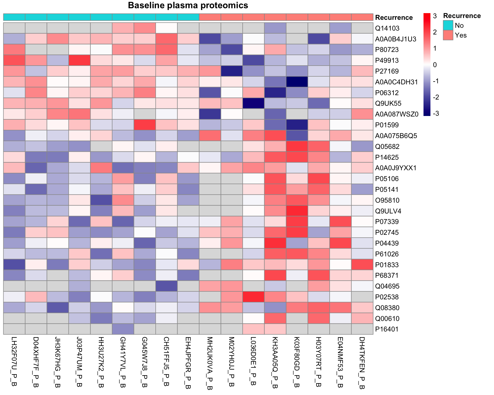
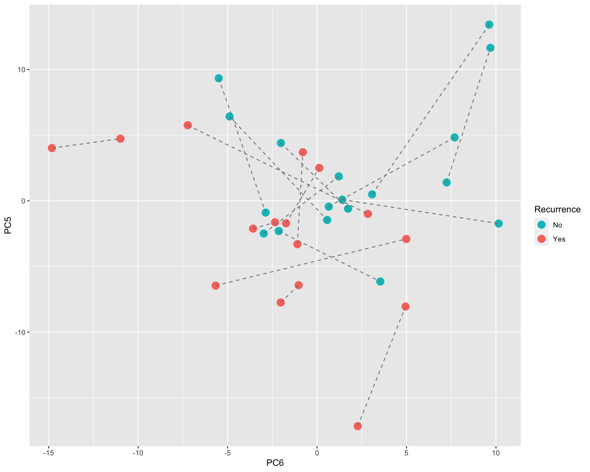
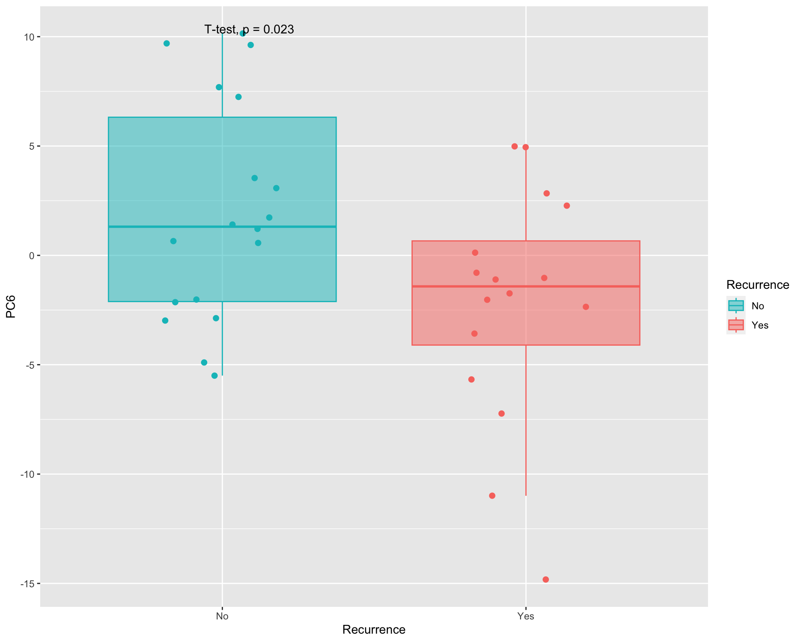
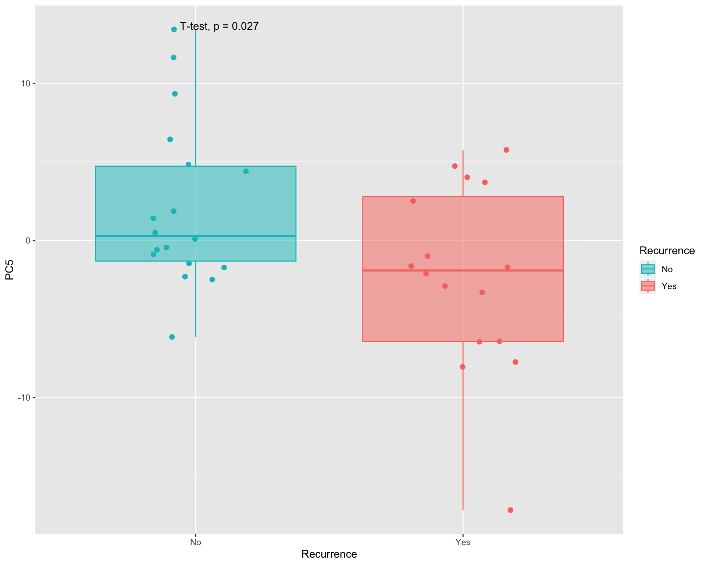
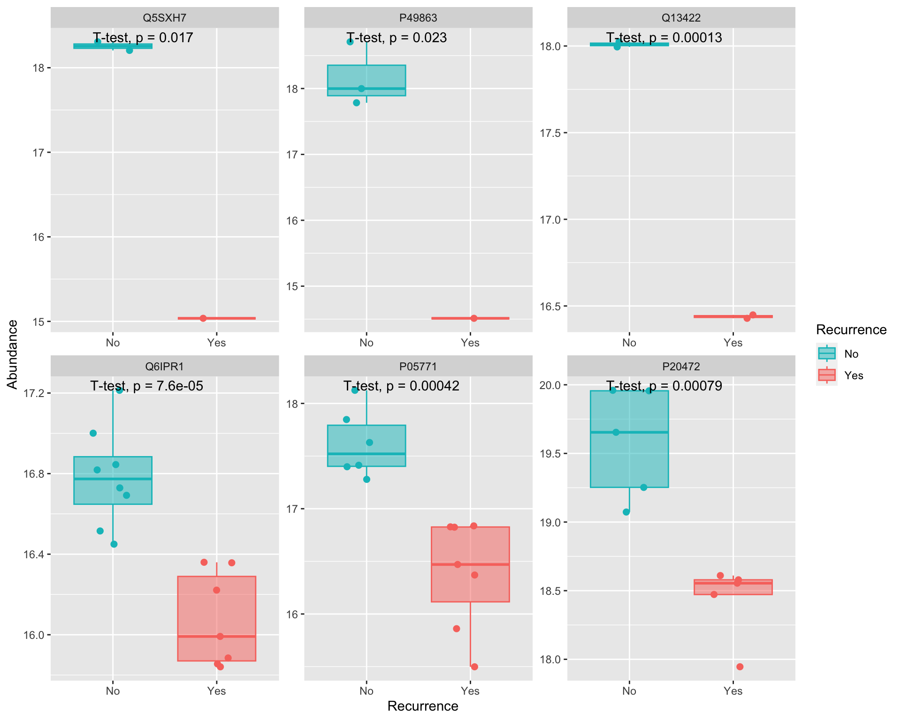
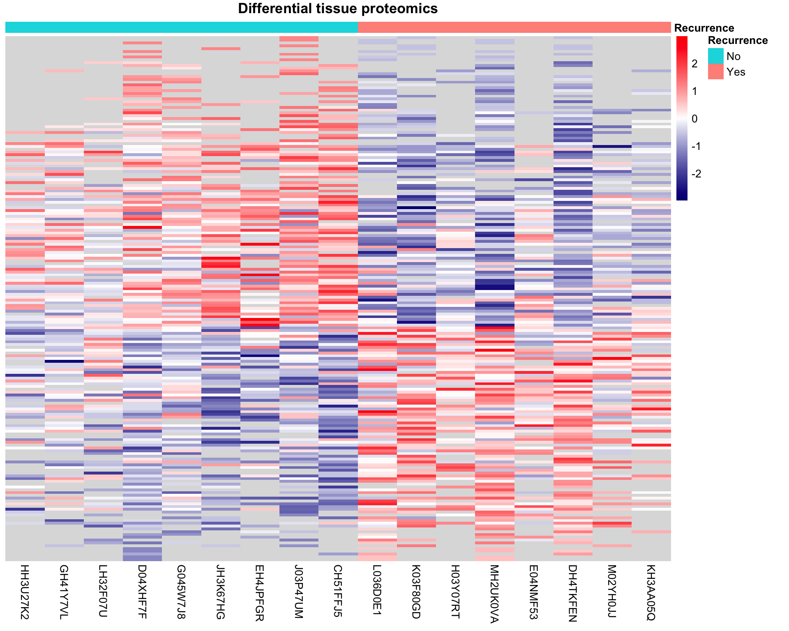

Single-omics analysis: Method development lung cancer patient cohort
Qian-Wu Liao
Last updated: 2023-05-17
Checks: 6 1
Knit directory:
SMART-CARE_LungCancer_MethodDev/
This reproducible R Markdown analysis was created with workflowr (version 1.7.0). The Checks tab describes the reproducibility checks that were applied when the results were created. The Past versions tab lists the development history.
Great! Since the R Markdown file has been committed to the Git repository, you know the exact version of the code that produced these results.
Great job! The global environment was empty. Objects defined in the global environment can affect the analysis in your R Markdown file in unknown ways. For reproduciblity it’s best to always run the code in an empty environment.
The command set.seed(20230425) was run prior to running
the code in the R Markdown file. Setting a seed ensures that any results
that rely on randomness, e.g. subsampling or permutations, are
reproducible.
Great job! Recording the operating system, R version, and package versions is critical for reproducibility.
Nice! There were no cached chunks for this analysis, so you can be confident that you successfully produced the results during this run.
Using absolute paths to the files within your workflowr project makes it difficult for you and others to run your code on a different machine. Change the absolute path(s) below to the suggested relative path(s) to make your code more reproducible.
| absolute | relative |
|---|---|
| /Users/qianwu/Desktop/SMART-CARE_LungCancer_MethodDev | . |
Great! You are using Git for version control. Tracking code development and connecting the code version to the results is critical for reproducibility.
The results in this page were generated with repository version 067f268. See the Past versions tab to see a history of the changes made to the R Markdown and HTML files.
Note that you need to be careful to ensure that all relevant files for
the analysis have been committed to Git prior to generating the results
(you can use wflow_publish or
wflow_git_commit). workflowr only checks the R Markdown
file, but you know if there are other scripts or data files that it
depends on. Below is the status of the Git repository when the results
were generated:
Ignored files:
Ignored: .DS_Store
Ignored: .RData
Ignored: .Rhistory
Ignored: analysis/.DS_Store
Ignored: code/.DS_Store
Ignored: data/.DS_Store
Ignored: output/.DS_Store
Untracked files:
Untracked: code/about.Rmd
Untracked: code/feature_selection.Rmd
Untracked: code/license.Rmd
Untracked: code/mofa_downstream_analysis.Rmd
Untracked: code/mofa_factors_investigation.Rmd
Untracked: code/workflowr_commands.R
Untracked: data/AG_Hell/
Untracked: data/AG_Hopf/
Untracked: data/AG_Krijgsveld/
Untracked: data/mofa/
Untracked: data/patient_metadata.tsv
Untracked: data/stats/
Untracked: output/AG_Hell/
Untracked: output/AG_Hopf/
Untracked: output/AG_Krijgsveld/
Untracked: output/heatmap_tar_untar_PM.png
Untracked: output/heatmap_tar_untar_TM.png
Untracked: output/mofa_barplot_performance.png
Untracked: output/mofa_boxplot_UntarBPM_UntarBPL_DDABPP.png
Untracked: output/mofa_boxplot_UntarBPM_UntarBPL_DDABPP_TarTTP.png
Untracked: output/mofa_setup_UntarBPM_UntarBPL_DDABPP.png
Untracked: output/mofa_setup_UntarBPM_UntarBPL_DDABPP_TarTT.png
Untracked: output/network_tar_untar_PM.png
Untracked: output/network_tar_untar_TM.png
Untracked: output/percentage_sigFeats.png
Unstaged changes:
Deleted: analysis/about.Rmd
Modified: analysis/comparisons_targeted_untargeted.Rmd
Deleted: analysis/license.Rmd
Modified: analysis/mofa_varied_omics_combinations.Rmd
Modified: analysis/preliminary_analysis_targeted_DDA.Rmd
Modified: analysis/preliminary_analysis_untargeted.Rmd
Modified: analysis/preprocessing_untargeted.Rmd
Note that any generated files, e.g. HTML, png, CSS, etc., are not included in this status report because it is ok for generated content to have uncommitted changes.
These are the previous versions of the repository in which changes were
made to the R Markdown
(analysis/preliminary_analysis_DIA.Rmd) and HTML
(docs/preliminary_analysis_DIA.html) files. If you’ve
configured a remote Git repository (see ?wflow_git_remote),
click on the hyperlinks in the table below to view the files as they
were in that past version.
| File | Version | Author | Date | Message |
|---|---|---|---|---|
| Rmd | 067f268 | LiaoQianWu | 2023-05-17 | Publish initial DIA proteomics preprocessing and single-omics analysis |
| Rmd | 120c24c | LiaoQianWu | 2023-05-04 | Perform preliminary analysis of DIA proteomics |
Description:
Load libraries
library('SummarizedExperiment')
library('proDA')
library('ggrepel')
library('ggfortify')
library('openxlsx')
library('tidyverse')
# Load user-defined functions
source('./code/misc.R')Plasma Proteomics
ADD COMMENT!
# Load normalized data
proPlasma <- readRDS('./data/AG_Krijgsveld/proPlasmaNorm_DIA.rds')
# Add time point information into data
timePoint <- as.data.frame(colData(proPlasma)) %>%
dplyr::mutate(TimePoint = dplyr::case_when(
Condition == 'Baseline' ~ 'Baseline',
Condition != 'Baseline' ~ '2 years later')) %>%
dplyr::select(TimePoint)
colData(proPlasma)['TimePoint'] <- timePoint
# Perform analysis
proPlasmaRes <- SOA(proPlasma, fac = c('Recurrence', 'TimePoint'))
tPCASigRes <- proPlasmaRes$tPCASigRes
pcaRes <- proPlasmaRes$pcaRes
pcTab <- proPlasmaRes$pcTabDisplay associations between learned PCs (Var1) and factors (Var2). Basically t-test was performed to test significance of difference between two groups, e.g., recurrence and non-recurrence patient groups or baseline and follow-up sample groups.
# Display PCs of interest
tPCASigRes Var1 Var2 pVal tStats pValAdj
1 PC10 Recurrence 0.001173714 3.563073 0.07981255
2 PC15 Recurrence 0.002767308 3.242803 0.09408847
3 PC28 TimePoint 0.020725812 2.433335 0.37033571
4 PC24 TimePoint 0.021784453 2.411815 0.37033571PC10 and PC15 can significantly separate recurrence and non-recurrence patient groups while both Baseline and Follow-up samples are used for PCA.
ggplot(pcTab, aes(x=PC10, y=PC15, col=Recurrence, group=Patient)) +
geom_point(size = 4) +
scale_color_manual(values=c('#00BFC4', '#F8766D')) +
geom_line(col = 'grey50', linetype = 'dashed')
ggplot(pcTab, aes(x=Recurrence, y=PC10, col=Recurrence, fill=Recurrence)) +
geom_boxplot(alpha = 0.5, outlier.shape = NA) +
geom_jitter(position = position_jitter(0.2), size = 2, show.legend = F) +
scale_color_manual(values=c('#00BFC4', '#F8766D')) +
scale_fill_manual(values=c('#00BFC4', '#F8766D')) +
ggpubr::stat_compare_means(method = 't.test', paired = F,
method.args = list(var.equal = T),
show.legend = F)
ggplot(pcTab, aes(x=Recurrence, y=PC15, col=Recurrence, fill=Recurrence)) +
geom_boxplot(alpha = 0.5, outlier.shape = NA) +
geom_jitter(position = position_jitter(0.2), size = 2, show.legend = F) +
scale_color_manual(values=c('#00BFC4', '#F8766D')) +
scale_fill_manual(values=c('#00BFC4', '#F8766D')) +
ggpubr::stat_compare_means(method = 't.test', paired = F,
method.args = list(var.equal = T),
show.legend = F)
Display variance explained by each PC
# Display proportion of total variance captured by all PCs explained by each PC
varExplained <- pcaRes$sdev^2 / sum(pcaRes$sdev^2)
PC <- paste0('PC', seq(length(varExplained)))
varTab <- data.frame(PC = factor(PC, levels = PC),
Var_explained = varExplained)
ggplot(varTab, aes(x=PC, y=Var_explained*100)) +
geom_col() +
labs(x = '', y = 'Variance explained (%)') +
theme(axis.text.x = element_text(angle = 90, hjust = 1, vjust = 0.5))
Baseline samples
Display significant associations between features (Var1) and cancer recurrence (Var2) and observe molecular signatures in input data through heatmap. Note that features in heatmap are ordered by their t-statistics.
# Subset baseline samples
smpBaseIdx <- which(colData(proPlasma)$Condition == 'Baseline')
proBase <- proPlasma[, smpBaseIdx]
# Perform analysis
proBaseRes <- SOA(proBase, fac = 'Recurrence', num_feats = 30)
datMat <- proBaseRes$data
smpAnno <- proBaseRes$smpMetadata
tFeatSigRes <- proBaseRes$tFeatSigRes
tPCASigRes <- proBaseRes$tPCASigRes
# Display features that can significantly separate recurrence and non-recurrence
# patients
tFeatSigRes Var1 Var2 pVal tStats pValAdj
1 Q08380 Recurrence 0.004408668 -3.347414 0.6019838
2 A0A0B4J1U3 Recurrence 0.005334971 3.293106 0.6019838
3 P49913 Recurrence 0.006579125 3.152020 0.6019838
4 Q00610 Recurrence 0.007094332 -3.589045 0.6019838
5 P02538 Recurrence 0.007144388 -3.186984 0.6019838
6 P80723 Recurrence 0.007425376 3.166947 0.6019838
7 P01833 Recurrence 0.008743804 -3.012690 0.6019838
8 P68371 Recurrence 0.009888851 -3.060554 0.6019838
9 P16401 Recurrence 0.012029124 -52.916905 0.6460362
10 P04439 Recurrence 0.015904892 -2.717062 0.6460362
11 P27169 Recurrence 0.016545040 2.697393 0.6460362
12 P61026 Recurrence 0.017593922 -2.717581 0.6460362
13 Q04695 Recurrence 0.019557739 -3.160294 0.6460362
14 P02745 Recurrence 0.020616213 -2.587230 0.6460362
15 P07339 Recurrence 0.020671980 -2.585871 0.6460362
16 Q9ULV4 Recurrence 0.024970916 -2.560666 0.6460362
17 O95810 Recurrence 0.025768760 -2.516603 0.6460362
18 Q14103 Recurrence 0.027291350 4.039787 0.6460362
19 P05141 Recurrence 0.028403807 -2.464941 0.6460362
20 P05106 Recurrence 0.029031139 -2.453323 0.6460362
21 A0A0C4DH31 Recurrence 0.029209802 2.410657 0.6460362
22 A0A0J9YXX1 Recurrence 0.029338140 -2.408416 0.6460362
23 P06312 Recurrence 0.030510950 2.388358 0.6460362
24 P14625 Recurrence 0.034270852 -2.328633 0.6954127
25 A0A075B6Q5 Recurrence 0.038494882 -2.268485 0.7300973
26 Q9UK55 Recurrence 0.038978503 2.261998 0.7300973
27 Q05682 Recurrence 0.040940642 -2.314946 0.7384479
28 P01599 Recurrence 0.049160542 2.140401 0.8346055
29 A0A087WSZ0 Recurrence 0.049907604 2.179846 0.8346055# Plot molecular signatures in input data
# Order features according to t-statistics
featOrder <- dplyr::arrange(tFeatSigRes, dplyr::desc(tStats))$Var1
# Arrange samples to make same groups in same clusters
smpOrder <- c(which(smpAnno$Recurrence == 'No'),
which(smpAnno$Recurrence == 'Yes'))
# Prepare recurrence table for annotating samples in heatmap
smpRecur <- dplyr::select(smpAnno, Sample, Recurrence) %>%
tibble::column_to_rownames('Sample')
pheatmap::pheatmap(datMat[featOrder, smpOrder],
annotation_col = smpRecur,
color = colorRampPalette(c('navy', 'white', 'red'))(100),
cluster_rows = F, cluster_cols = F,
scale = 'row', #row scaling is across columns
main = 'Baseline plasma proteomics')
Owing to missing values, there might be a situation that only few observations in sample groups, resulting in unreliable t-statistics. (e.g., proteins Q14103 and P16401 right above) We used probabilistic dropout model to account for data missingness and identify differentially abundant entities that are significantly associated with cancer recurrence. Note that features in heatmap are ordered by their t-statistics.
# Fit linear probabilistic dropout model to normalized data
fit <- proDA::proDA(datMat, design = ~ smpAnno$Recurrence)
# fit
# Check coefficient names for Parameter 'contrast' in proDA::test_diff()
# proDA::result_names(fit)
# Identify significant differentially abundant entities
all_proDAProBaseRes <- proDA::test_diff(fit,
contrast = Intercept + `smpAnno$RecurrenceYes` - Intercept,
sort_by = 'pval')
proDAProBaseRes <- dplyr::select(all_proDAProBaseRes, -c(diff, se, df, avg_abundance, n_approx)) %>%
dplyr::filter(pval < 0.05)
proDAProBaseRes name pval adj_pval t_statistic n_obs
1 Q04695 0.001779582 0.5537617 3.789906 8
2 A0A0B4J1U3 0.003208443 0.5537617 -3.502286 16
3 Q00610 0.005596824 0.5537617 3.231015 10
4 P80723 0.006772593 0.5537617 -3.137847 15
5 P49913 0.007135957 0.5537617 -3.112279 17
6 P16401 0.008380553 0.5537617 3.033512 3
7 P01833 0.008809931 0.5537617 3.008991 17
8 Q9HC84 0.008907920 0.5537617 3.003560 2
9 Q08380 0.009869021 0.5537617 2.953200 17
10 P04439 0.014041726 0.6575519 2.779006 17
11 O00194 0.016455539 0.6575519 2.700098 4
12 P68371 0.019342571 0.6575519 2.619257 14
13 Q9ULV4 0.019365151 0.6575519 2.618671 14
14 P61026 0.020112147 0.6575519 2.599672 15
15 P27169 0.020794915 0.6575519 -2.582889 17
16 P02538 0.025632140 0.6575519 2.477209 15
17 Q05682 0.026689328 0.6575519 2.456668 13
18 A0A0C4DH31 0.026909557 0.6575519 -2.452487 17
19 Q14103 0.027685285 0.6575519 -2.438013 5
20 P07339 0.027905887 0.6575519 2.433968 17
21 P05141 0.027930889 0.6575519 2.433511 15
22 A0A0J9YXX1 0.030594946 0.6575519 2.386949 17
23 P26641 0.031164869 0.6575519 2.377488 2
24 P02745 0.031249991 0.6575519 2.376089 17
25 A0A075B6Q5 0.033945563 0.6656456 2.333550 17
26 O95810 0.034270862 0.6656456 2.328633 15
27 P05106 0.038232426 0.6903928 2.272038 15
28 P35555 0.038279207 0.6903928 2.271403 4
29 P06312 0.047626237 0.8045684 -2.157133 17
30 P01599 0.048071823 0.8045684 -2.152223 17
31 P14625 0.049452606 0.8045684 2.137271 17# Plot molecular signatures in input data
# Order features according to t-statistics
featOrder <- dplyr::arrange(proDAProBaseRes, dplyr::desc(t_statistic))$name
pheatmap::pheatmap(datMat[featOrder, smpOrder],
annotation_col = smpRecur,
color = colorRampPalette(c('navy', 'white', 'red'))(100),
cluster_rows = F, cluster_cols = F,
scale = 'row', main = 'Baseline plasma proteomics (proDA)')
Visualize data of top 6 significant features based on proDA result
# Visualize data of top 6 significant features
topSigFeats <- proDAProBaseRes$name[1:6]
topSigFeatData <- tibble::as_tibble(datMat[topSigFeats,], rownames = 'Feature') %>%
tidyr::pivot_longer(cols = -'Feature',
names_to = 'Sample', values_to = 'Abundance') %>%
dplyr::mutate(Feature = factor(Feature, levels = topSigFeats)) %>%
dplyr::left_join(smpAnno, by = 'Sample')
ggplot(topSigFeatData, aes(x=Recurrence, y=Abundance, col=Recurrence, fill=Recurrence)) +
geom_boxplot(alpha = 0.5, outlier.shape = NA) +
geom_jitter(position = position_jitter(0.2), size = 2, show.legend = F) +
scale_color_manual(values=c('#00BFC4', '#F8766D')) +
scale_fill_manual(values=c('#00BFC4', '#F8766D')) +
facet_wrap(vars(Feature), scales = 'free') +
ggpubr::stat_compare_means(method = 't.test', paired = F,
method.args = list(var.equal = T),
show.legend = F) -> ADD COMMENT!
-> ADD COMMENT!
There is no significant association between PCs (Var1) and cancer recurrence (Var2).
# Display PCs that can significantly separate recurrence and non-recurrence
# patients
tPCASigRes[1] Var1 Var2 pVal tStats pValAdj
<0 rows> (or 0-length row.names)Follow-up samples
Display significant associations between features (Var1) and cancer recurrence (Var2) and observe molecular signatures in input data through heatmap. Note that features in heatmap are ordered by their t-statistics.
# Subset follow-up samples
smpFoloIdx <- which(colData(proPlasma)$Condition != 'Baseline')
proFolo <- proPlasma[, smpFoloIdx]
# Perform analysis
proFoloRes <- SOA(proFolo, fac = 'Recurrence', num_feats = 30)
datMat <- proFoloRes$data
smpAnno <- proFoloRes$smpMetadata
tFeatSigRes <- proFoloRes$tFeatSigRes
tPCASigRes <- proFoloRes$tPCASigRes
pcaRes <- proFoloRes$pcaRes
pcTab <- proFoloRes$pcTab
pcTopFeatTab <- proFoloRes$pcTopFeatTab
# Display features that can significantly separate recurrence and non-recurrence
# patients
tFeatSigRes Var1 Var2 pVal tStats pValAdj
1 P50395 Recurrence 0.007681799 3.325045 0.9976724
2 A0A087WSY4 Recurrence 0.008759465 4.782503 0.9976724
3 A0A075B6J1 Recurrence 0.020203598 2.712412 0.9976724
4 P02748 Recurrence 0.026294564 -2.464246 0.9976724
5 P01782;P0DP04 Recurrence 0.029105264 2.412489 0.9976724
6 Q13822 Recurrence 0.031044663 2.417597 0.9976724
7 P02649 Recurrence 0.035487086 2.310632 0.9976724
8 P48735 Recurrence 0.035539861 -2.856789 0.9976724
9 Q92954 Recurrence 0.041447630 2.230008 0.9976724
10 A0A0J9YXX1 Recurrence 0.042343947 -2.233576 0.9976724
11 P01817 Recurrence 0.044067825 2.197948 0.9976724
12 P14625 Recurrence 0.045921130 -2.176324 0.9976724# Plot molecular signatures in input data
# Order features according to t-statistics
featOrder <- dplyr::arrange(tFeatSigRes, dplyr::desc(tStats))$Var1
# Arrange samples to make same groups in same clusters
smpOrder <- c(which(smpAnno$Recurrence == 'No'),
which(smpAnno$Recurrence == 'Yes'))
# Prepare recurrence table for annotating samples in heatmap
smpRecur <- dplyr::select(smpAnno, Sample, Recurrence) %>%
tibble::column_to_rownames('Sample')
pheatmap::pheatmap(datMat[featOrder, smpOrder],
annotation_col = smpRecur,
color = colorRampPalette(c('navy', 'white', 'red'))(100),
cluster_rows = F, cluster_cols = F,
scale = 'row', main = 'Follow-up plasma proteomics')
Use probabilistic dropout model to account for data missingness and identify differentially abundant entities that are significantly associated with cancer recurrence. Note that features in heatmap are ordered by their t-statistics.
# Fit linear probabilistic dropout model to normalized data
fit <- proDA::proDA(datMat, design = ~ smpAnno$Recurrence)
# fit
# Check coefficient names for Parameter 'contrast' in proDA::test_diff()
# proDA::result_names(fit)
# Identify significant differentially abundant entities
all_proDAProFoloRes <- proDA::test_diff(fit,
contrast = Intercept + `smpAnno$RecurrenceYes` - Intercept,
sort_by = 'pval')
proDAProFoloRes <- dplyr::select(all_proDAProFoloRes, -c(diff, se, df, avg_abundance, n_approx)) %>%
dplyr::filter(pval < 0.05)
proDAProFoloRes name pval adj_pval t_statistic n_obs
1 P50395 0.003273902 0.997644 -3.492444 12
2 P02461 0.010172281 0.997644 -2.938305 3
3 A0A075B6J1 0.016393287 0.997644 -2.701988 13
4 P48735 0.021611164 0.997644 2.563506 7
5 P01782;P0DP04 0.028961682 0.997644 -2.415015 17
6 P02748 0.029226219 0.997644 2.410370 17
7 A0A0J9YXX1 0.031006936 0.997644 2.380094 16
8 P08572 0.037184752 0.997644 -2.286450 3
9 Q8NBP7 0.039898003 0.997644 -2.249870 6
10 P00325 0.044592039 0.997644 -2.191747 12
11 Q16555 0.046199565 0.997644 -2.173146 2
12 Q13822 0.046473815 0.997644 -2.170033 15
13 A0A087WSY4 0.046745985 0.997644 -2.166960 6
14 P01817 0.047767735 0.997644 -2.155570 17
15 A0A075B6S5 0.049624091 0.997644 2.135441 17
16 Q92954 0.049654468 0.997644 -2.135117 17# Plot molecular signatures in input data
# Order features according to t-statistics
featOrder <- dplyr::arrange(proDAProFoloRes, dplyr::desc(t_statistic))$name
pheatmap::pheatmap(datMat[featOrder, smpOrder],
annotation_col = smpRecur,
color = colorRampPalette(c('navy', 'white', 'red'))(100),
cluster_rows = F, cluster_cols = F,
scale = 'row', main = 'Follow-up plasma proteomics (proDA)')
Visualize data of top 6 significant features based on proDA result
# Visualize data of top 6 significant features
topSigFeats <- proDAProFoloRes$name[1:6]
topSigFeatData <- tibble::as_tibble(datMat[topSigFeats,], rownames = 'Feature') %>%
tidyr::pivot_longer(cols = -'Feature',
names_to = 'Sample', values_to = 'Abundance') %>%
dplyr::mutate(Feature = factor(Feature, levels = topSigFeats)) %>%
dplyr::left_join(smpAnno, by = 'Sample')
ggplot(topSigFeatData, aes(x=Recurrence, y=Abundance, col=Recurrence, fill=Recurrence)) +
geom_boxplot(alpha = 0.5, outlier.shape = NA) +
geom_jitter(position = position_jitter(0.2), size = 2, show.legend = F) +
scale_color_manual(values=c('#00BFC4', '#F8766D')) +
scale_fill_manual(values=c('#00BFC4', '#F8766D')) +
facet_wrap(vars(Feature), scales = 'free') +
ggpubr::stat_compare_means(method = 't.test', paired = F,
method.args = list(var.equal = T),
show.legend = F)
Display significant associations between PCs (Var1) and cancer recurrence (Var2)
# Display PCs that can significantly separate recurrence and non-recurrence
# patients
tPCASigRes Var1 Var2 pVal tStats pValAdj
1 PC11 Recurrence 0.00675815 3.138892 0.1148885# Display proportion of total variance captured by all PCs explained by each PC
varExplained <- pcaRes$sdev^2 / sum(pcaRes$sdev^2)
PC <- paste0('PC', seq(length(varExplained)))
varTab <- data.frame(PC = factor(PC, levels = PC),
Var_explained = varExplained)
ggplot(varTab, aes(x=PC, y=Var_explained*100)) +
geom_col() +
labs(x = '', y = 'Variance explained (%)',
title = 'Follow-up plasma proteomics')
PC11 potentially separates recurrence and non-recurrence patients.
# Visualize PCs
ggplot(pcTab, aes(x=Recurrence, y=PC11, col=Recurrence, fill=Recurrence)) +
geom_boxplot(alpha = 0.5, outlier.shape = NA) +
geom_jitter(position = position_jitter(0.2), size = 2, show.legend = F) +
labs(title = 'Follow-up plasma proteomics') +
scale_color_manual(values=c('#00BFC4', '#F8766D')) +
scale_fill_manual(values=c('#00BFC4', '#F8766D')) +
ggpubr::stat_compare_means(method = 't.test', paired = F, size = 6,
method.args = list(var.equal = T), hjust = 0.65,
show.legend = F)
Plot molecular signatures captured by PC11 in input data. We took a look at top 20 features with highest loadings and observed protein levels of these top features through heatmap. Note that features in heatmap are ordered by their loadings. There is no single feature that can decently hint if patients will suffer cancer recurrence or not, which means each of these top features contributes a bit to explaining variation between recurrence and non-recurrence patients.
# Plot molecular signatures in input data
# Extract top features with highest loadings
topFeats <- pcTopFeatTab$PC11$Feature[1:20]
# Order features by loadings
topFeatsIdx <- sapply(topFeats, function(feat) {which(rownames(datMat) == feat)})
pheatmap::pheatmap(datMat[topFeatsIdx, smpOrder],
annotation_col = smpRecur,
color = colorRampPalette(c('navy', 'white', 'red'))(100),
cluster_rows = F, cluster_cols = F,
scale = 'row', main = 'Follow-up plasma proteomics - PC11')
Display top features that build the PC11
# Display top features with highest loadings of PC of interest
pcTopFeatTab$PC11 Feature Loading
1 P06702 0.21481238
2 P01861 0.20660224
3 P09172 0.19056027
4 A0M8Q6 0.18077807
5 P08519 0.17433361
6 P0DJI8 0.16178476
7 A0A0C4DH43 0.14910350
8 A0A075B6I0 0.14488089
9 A0A075B6P5;P01615 0.14375561
10 P20742 0.14046377
11 A0A075B6R2 0.13550211
12 A0A0A0MT89 0.12384043
13 P04264 0.12231356
14 P80748 0.11943418
15 P35527 0.11772137
16 Q8TAQ9 0.11732041
17 P69905 0.10980930
18 P35908 0.10973254
19 P07355 0.10895998
20 P06727 0.10848545
21 P61224 0.10530217
22 P22891 0.10526509
23 P14151 0.10282995
24 P24557 0.10195881
25 P15814 0.09817008
26 P10720 0.09798253
27 P0C0L4 0.09793040
28 O14791 0.09729117
29 P49913 0.09632941
30 P13645 0.09423374Changes in time course
Differences between Follow-up and Baseline samples (Follow-up matrix
- baseline matrix):
Display significant associations between features (Var1) and cancer recurrence (Var2) and observe molecular signatures in input data through heatmap. Note that features in heatmap are ordered by their t-statistics.
# Subset baseline samples
smpBaseIdx <- which(colData(proPlasma)$Condition == 'Baseline')
proBase <- proPlasma[, smpBaseIdx]
# Subset follow-up samples
smpFoloIdx <- which(colData(proPlasma)$Condition != 'Baseline')
proFolo <- proPlasma[, smpFoloIdx]
# Modify column names for matching two matrices
colnames(proBase) <- stringr::str_remove(colnames(proBase), '_P_B')
colnames(proFolo) <- stringr::str_remove(colnames(proFolo), '_P_R')
# Retrieve data matrix
proBaseMat <- SummarizedExperiment::assay(proBase)
proFoloMat <- SummarizedExperiment::assay(proFolo)
# Subtract follow-up matrix by baseline matrix
if (identical(colnames(proBaseMat), colnames(proFoloMat)) &
identical(rownames(proBaseMat), rownames(proFoloMat))) {
proPlasmaDiffMat <- proFoloMat - proBaseMat
} else {
print('Align samples or features first.')
}
# Retrieve samples metadata for creating SE object
colAnno <- dplyr::select(as.data.frame(colData(proBase)), Patient, Recurrence)
proPlasmaDiff <- SummarizedExperiment(assays = proPlasmaDiffMat, colData = colAnno)
# Perform analysis
proPlasmaDiffRes <- SOA(proPlasmaDiff, fac = 'Recurrence', num_feats = 30)
datMat <- proPlasmaDiffRes$data
smpAnno <- proPlasmaDiffRes$smpMetadata
tFeatSigRes <- proPlasmaDiffRes$tFeatSigRes
tPCASigRes <- proPlasmaDiffRes$tPCASigRes
# Display features that can significantly separate recurrence and non-recurrence
# patients
tFeatSigRes Var1 Var2 pVal tStats pValAdj
1 P02745 Recurrence 0.001061167 4.043522 0.4849534
2 P61769 Recurrence 0.020614558 2.587270 0.9855774
3 A0A075B6J1 Recurrence 0.022962835 2.683286 0.9855774
4 P01742 Recurrence 0.023581099 -2.519471 0.9855774
5 A0A0C4DH29 Recurrence 0.027904154 2.474372 0.9855774
6 P04070 Recurrence 0.034117558 -2.330945 0.9855774
7 P01591 Recurrence 0.036383916 2.297725 0.9855774
8 P01871 Recurrence 0.037243649 2.285629 0.9855774
9 A0A075B6S5 Recurrence 0.038842422 -2.263816 0.9855774
10 P04439 Recurrence 0.042623682 2.247245 0.9855774
11 Q9ULV4 Recurrence 0.044095615 2.386506 0.9855774
12 P02786 Recurrence 0.049568067 -2.136038 0.9855774# Plot molecular signatures in input data
# Order features according to t-statistics
featOrder <- dplyr::arrange(tFeatSigRes, dplyr::desc(tStats))$Var1
# Arrange samples to make same groups in same clusters
smpOrder <- c(which(smpAnno$Recurrence == 'No'),
which(smpAnno$Recurrence == 'Yes'))
# Prepare recurrence table for annotating samples in heatmap
smpRecur <- dplyr::select(smpAnno, Sample, Recurrence) %>%
tibble::column_to_rownames('Sample')
pheatmap::pheatmap(datMat[featOrder, smpOrder],
annotation_col = smpRecur,
color = colorRampPalette(c('navy', 'white', 'red'))(100),
cluster_rows = F, cluster_cols = F,
scale = 'row', main = 'Differential plasma proteomics')
Use probabilistic dropout model to account for data missingness and identify differentially abundant entity differences that are significantly associated with cancer recurrence. Note that there is no differentially abundant protein.
# Fit linear probabilistic dropout model to normalized data
fit <- proDA::proDA(datMat, design = ~ smpAnno$Recurrence)
# fit
# Check coefficient names for Parameter 'contrast' in proDA::test_diff()
# proDA::result_names(fit)
# Identify significant differentially abundant entities
proDAProPlasmaDiffRes <- proDA::test_diff(fit,
contrast = Intercept + `smpAnno$RecurrenceYes` - Intercept,
sort_by = 'pval', n_max = 30) %>%
dplyr::select(-c(diff, se, df, avg_abundance, n_approx))
proDAProPlasmaDiffRes name pval adj_pval t_statistic n_obs
151 P02745 0.4010160 0.9999464 -0.8643333 17
129 P01871 0.5064024 0.9999464 -0.6807509 17
166 P02786 0.5141583 0.9999464 0.6681983 17
434 Q12805 0.5394750 0.9999464 -0.6279581 17
395 P61769 0.5412678 0.9999464 -0.6251489 17
99 P01591 0.5423510 0.9999464 -0.6234540 17
53 B9A064 0.5673375 0.9999464 0.5848577 17
293 P14151 0.5718909 0.9999464 0.5779225 17
150 P02743 0.5750489 0.9999464 0.5731297 17
177 P04114 0.5759616 0.9999464 -0.5717472 17
112 P01717 0.5760348 0.9999464 0.5716362 17
201 P05362 0.5779198 0.9999464 -0.5687845 16
75 P00488 0.5836464 0.9999464 -0.5601504 17
321 P22352 0.5910798 0.9999464 0.5490075 17
385 P55072 0.5985986 0.9999464 -0.5378086 15
199 P05160 0.6011021 0.9999464 -0.5340954 17
174 P04070 0.6031251 0.9999464 0.5311006 17
114 P01742 0.6033684 0.9999464 0.5307408 17
168 P02790 0.6040337 0.9999464 0.5297572 17
49 A0A0G2JS06 0.6222342 0.9999464 -0.5030510 15
476 Q92954 0.6227720 0.9999464 -0.5022676 17
81 P00739 0.6248228 0.9999464 0.4992835 17
78 P00734 0.6326096 0.9999464 0.4879948 17
426 Q04756 0.6380184 0.9999464 0.4801920 17
454 Q15582 0.6395729 0.9999464 -0.4779551 17
462 Q6EMK4 0.6415559 0.9999464 0.4751053 17
121 P01817 0.6445065 0.9999464 -0.4708724 17
275 P11226 0.6510117 0.9999464 0.4615711 17
481 Q9BXR6 0.6524576 0.9999464 0.4595095 17
340 P27169 0.6525088 0.9999464 0.4594365 17Visualize data of top 6 significant features based on regular t-test result
# Visualize data of top 6 significant features
topSigFeats <- tFeatSigRes$Var1[1:6]
topSigFeatData <- tibble::as_tibble(datMat[topSigFeats,], rownames = 'Feature') %>%
tidyr::pivot_longer(cols = -'Feature',
names_to = 'Sample', values_to = 'Abundance') %>%
dplyr::mutate(Feature = factor(Feature, levels = topSigFeats)) %>%
dplyr::left_join(smpAnno, by = 'Sample')
ggplot(topSigFeatData, aes(x=Recurrence, y=Abundance, col=Recurrence, fill=Recurrence)) +
geom_boxplot(alpha = 0.5, outlier.shape = NA) +
geom_jitter(position = position_jitter(0.2), size = 2, show.legend = F) +
scale_color_manual(values=c('#00BFC4', '#F8766D')) +
scale_fill_manual(values=c('#00BFC4', '#F8766D')) +
facet_wrap(vars(Feature), scales = 'free') +
ggpubr::stat_compare_means(method = 't.test', paired = F,
method.args = list(var.equal = T),
show.legend = F)
There is no significant association between PCs (Var1) and cancer recurrence (Var2).
# Display PCs that can significantly separate recurrence and non-recurrence
# patients
tPCASigRes[1] Var1 Var2 pVal tStats pValAdj
<0 rows> (or 0-length row.names)Tissue Proteomics
ADD COMMENT!
# Load normalized data
proTissue <- readRDS('./data/AG_Krijgsveld/proTissueNorm_DIA.rds')
# Perform analysis
proTissueRes <- SOA(proTissue, fac = c('Recurrence', 'Condition'))
tPCASigRes <- proTissueRes$tPCASigRes
pcaRes <- proTissueRes$pcaRes
pcTab <- proTissueRes$pcTabDisplay associations between learned PCs (Var1) and factors (Var2). Basically t-test was performed to test significance of difference between two groups, e.g., recurrence and non-recurrence patient groups or tumor and normal sample groups.
# Display PCs of interest
tPCASigRes Var1 Var2 pVal tStats pValAdj
1 PC28 Recurrence 0.01067275 -2.711887 0.6091769
2 PC6 Recurrence 0.02336951 2.381311 0.6091769
3 PC5 Recurrence 0.02687545 2.320013 0.6091769
4 PC12 Condition 0.04573856 2.078766 0.7461845PC28, PC6, and PC5 can significantly separate recurrence and non-recurrence patient groups while both Tumor and Normal samples are used for PCA.
ggplot(pcTab, aes(x=Recurrence, y=PC28, col=Recurrence, fill=Recurrence)) +
geom_boxplot(alpha = 0.5, outlier.shape = NA) +
geom_jitter(position = position_jitter(0.2), size = 2, show.legend = F) +
scale_color_manual(values=c('#00BFC4', '#F8766D')) +
scale_fill_manual(values=c('#00BFC4', '#F8766D')) +
ggpubr::stat_compare_means(method = 't.test', paired = F,
method.args = list(var.equal = T),
show.legend = F)
ggplot(pcTab, aes(x=PC6, y=PC5, col=Recurrence, group=Patient)) +
geom_point(size = 4) +
scale_color_manual(values=c('#00BFC4', '#F8766D')) +
geom_line(col = 'grey50', linetype = 'dashed')
ggplot(pcTab, aes(x=Recurrence, y=PC6, col=Recurrence, fill=Recurrence)) +
geom_boxplot(alpha = 0.5, outlier.shape = NA) +
geom_jitter(position = position_jitter(0.2), size = 2, show.legend = F) +
scale_color_manual(values=c('#00BFC4', '#F8766D')) +
scale_fill_manual(values=c('#00BFC4', '#F8766D')) +
ggpubr::stat_compare_means(method = 't.test', paired = F,
method.args = list(var.equal = T),
show.legend = F)
ggplot(pcTab, aes(x=Recurrence, y=PC5, col=Recurrence, fill=Recurrence)) +
geom_boxplot(alpha = 0.5, outlier.shape = NA) +
geom_jitter(position = position_jitter(0.2), size = 2, show.legend = F) +
scale_color_manual(values=c('#00BFC4', '#F8766D')) +
scale_fill_manual(values=c('#00BFC4', '#F8766D')) +
ggpubr::stat_compare_means(method = 't.test', paired = F,
method.args = list(var.equal = T),
show.legend = F)
Display variance explained by each PC
# Display proportion of total variance captured by all PCs explained by each PC
varExplained <- pcaRes$sdev^2 / sum(pcaRes$sdev^2)
PC <- paste0('PC', seq(length(varExplained)))
varTab <- data.frame(PC = factor(PC, levels = PC),
Var_explained = varExplained)
ggplot(varTab, aes(x=PC, y=Var_explained*100)) +
geom_col() +
labs(x = '', y = 'Variance explained (%)') +
theme(axis.text.x = element_text(angle = 90, hjust = 1, vjust = 0.5))
Tumor samples
Display significant associations between features (Var1) and cancer recurrence (Var2) and observe molecular signatures in input data through heatmap. Note that features in heatmap are ordered by their t-statistics.
# Subset tumor samples
smpTumorIdx <- which(colData(proTissue)$Condition == 'Tumor')
proTumor <- proTissue[, smpTumorIdx]
# Perform analysis
proTumorRes <- SOA(proTumor, fac = 'Recurrence', num_feats = 30)
datMat <- proTumorRes$data
smpAnno <- proTumorRes$smpMetadata
tFeatSigRes <- proTumorRes$tFeatSigRes
tPCASigRes <- proTumorRes$tPCASigRes
pcaRes <- proTumorRes$pcaRes
pcTab <- proTumorRes$pcTab
pcTopFeatTab <- proTumorRes$pcTopFeatTab
# Display features that can significantly separate recurrence and non-recurrence
# patients
tFeatSigRes Var1 Var2 pVal tStats pValAdj
1 Q6IPR1 Recurrence 7.626019e-05 5.673302 0.4096396
2 Q13422 Recurrence 1.255985e-04 89.220941 0.4096396
3 P05771 Recurrence 4.189865e-04 4.974620 0.9110162
4 P20472 Recurrence 7.949330e-04 5.227869 0.9627612
5 Q6P9B9 Recurrence 8.037951e-04 -4.180604 0.9627612
6 Q9Y6X3 Recurrence 8.855691e-04 -4.202881 0.9627612
7 Q8IUR0 Recurrence 1.369284e-03 -3.918259 0.9828361
8 Q96T76 Recurrence 2.226645e-03 -3.680416 0.9828361
9 Q38SD2 Recurrence 2.262316e-03 -5.732272 0.9828361
10 Q15042 Recurrence 2.515681e-03 -4.141588 0.9828361
11 P43358 Recurrence 2.748329e-03 4.263493 0.9828361
12 P01920 Recurrence 3.254496e-03 3.495341 0.9828361
13 Q9H2V7 Recurrence 3.511988e-03 3.620400 0.9828361
14 Q9UKZ1 Recurrence 4.225101e-03 -3.951840 0.9828361
15 Q8WYJ6 Recurrence 4.514577e-03 3.335841 0.9828361
16 Q969X1 Recurrence 4.998779e-03 5.597946 0.9828361
17 Q86Y56 Recurrence 5.320688e-03 -3.255710 0.9828361
18 Q5EG05 Recurrence 5.355818e-03 5.492104 0.9828361
19 Q9Y6Y9 Recurrence 5.499041e-03 3.239619 0.9828361
20 Q3KRA6 Recurrence 5.989904e-03 -3.573654 0.9828361
21 Q9UGQ2 Recurrence 6.203522e-03 102.619068 0.9828361
22 Q86UW8;Q96S86 Recurrence 6.311048e-03 100.870561 0.9828361
23 P30260 Recurrence 6.361738e-03 -3.204626 0.9828361
24 P52566 Recurrence 6.494639e-03 3.158338 0.9828361
25 Q86U42 Recurrence 6.964282e-03 3.124195 0.9828361
26 Q3V6T2 Recurrence 7.046018e-03 3.593746 0.9828361
27 P10321 Recurrence 7.833891e-03 3.066583 0.9828361
28 Q96ED9 Recurrence 7.914215e-03 -4.273251 0.9828361
29 Q14139 Recurrence 8.064355e-03 3.052372 0.9828361
30 O95696 Recurrence 8.490421e-03 -3.027122 0.9828361
31 Q15334 Recurrence 8.589226e-03 -3.021445 0.9828361
32 Q2TAL8 Recurrence 8.662498e-03 -3.017276 0.9828361
33 Q9NWT1 Recurrence 8.887591e-03 10.536539 0.9828361
34 P18858 Recurrence 8.916435e-03 -4.758283 0.9828361
35 Q14CX7 Recurrence 9.180731e-03 -3.056707 0.9828361
36 Q8N5F7 Recurrence 9.471572e-03 3.753419 0.9828361
37 Q96RE7 Recurrence 9.639272e-03 -3.190909 0.9828361
38 P62072 Recurrence 9.980756e-03 3.106886 0.9828361
39 P63172 Recurrence 1.000756e-02 -3.168828 0.9828361
40 P49795 Recurrence 1.045312e-02 3.080974 0.9828361
41 Q9BTZ2 Recurrence 1.061572e-02 2.917290 0.9828361
42 Q9NUJ3 Recurrence 1.080076e-02 -3.303598 0.9828361
43 P19634 Recurrence 1.105896e-02 3.187043 0.9828361
44 O15160 Recurrence 1.124638e-02 -2.888835 0.9828361
45 P28065 Recurrence 1.162731e-02 2.872394 0.9828361
46 P48382 Recurrence 1.210090e-02 3.131066 0.9828361
47 Q8NEU8 Recurrence 1.249763e-02 -2.836721 0.9828361
48 Q9BY32 Recurrence 1.271764e-02 -2.887153 0.9828361
49 Q96JP5 Recurrence 1.291510e-02 5.328773 0.9828361
50 P48163 Recurrence 1.312092e-02 2.812632 0.9828361
51 Q9H098 Recurrence 1.318795e-02 3.006870 0.9828361
52 Q0P6H9 Recurrence 1.363370e-02 3.449957 0.9828361
53 Q9UGK3 Recurrence 1.394861e-02 -8.378259 0.9828361
54 Q96JQ2 Recurrence 1.395941e-02 5.180919 0.9828361
55 P62136 Recurrence 1.429366e-02 -2.770180 0.9828361
56 Q9BTT0 Recurrence 1.450840e-02 -2.762774 0.9828361
57 Q1ED39 Recurrence 1.458267e-02 8.190130 0.9828361
58 Q9Y5L0 Recurrence 1.498271e-02 2.879574 0.9828361
59 Q8TDH9 Recurrence 1.502701e-02 -2.930534 0.9828361
60 Q15120 Recurrence 1.507511e-02 2.743731 0.9828361
61 P28062 Recurrence 1.587814e-02 2.717901 0.9828361
62 Q8IZH2 Recurrence 1.609110e-02 -2.711263 0.9828361
63 O43914 Recurrence 1.616264e-02 3.149531 0.9828361
64 Q9H4G0 Recurrence 1.641960e-02 2.701189 0.9828361
65 Q9HCU5 Recurrence 1.677853e-02 2.742437 0.9828361
66 Q13576 Recurrence 1.685527e-02 2.688124 0.9828361
67 Q96BY6 Recurrence 1.714411e-02 2.703341 0.9828361
68 P07333 Recurrence 1.725320e-02 2.849895 0.9828361
69 P86790;P86791 Recurrence 1.730980e-02 -2.759044 0.9828361
70 Q5SXH7 Recurrence 1.735435e-02 36.674488 0.9828361
71 P28074 Recurrence 1.736496e-02 -2.673248 0.9828361
72 Q5C9Z4 Recurrence 1.759747e-02 4.760671 0.9828361
73 P51812 Recurrence 1.771303e-02 2.663329 0.9828361
74 O15066 Recurrence 1.773156e-02 2.895265 0.9828361
75 P06729 Recurrence 1.802706e-02 3.460786 0.9828361
76 Q7Z3U7 Recurrence 1.837205e-02 -2.645053 0.9828361
77 Q9P287 Recurrence 1.838150e-02 -2.694621 0.9828361
78 P20701 Recurrence 1.848252e-02 2.723649 0.9828361
79 Q96FS4 Recurrence 1.850147e-02 2.641538 0.9828361
80 P24311 Recurrence 1.879268e-02 3.191837 0.9828361
81 O00425 Recurrence 1.937155e-02 -3.167845 0.9828361
82 Q9P2D1 Recurrence 1.991307e-02 2.626728 0.9828361
83 Q9BRR9 Recurrence 2.001192e-02 2.602181 0.9828361
84 Q8N6R0 Recurrence 2.028963e-02 -2.595257 0.9828361
85 P12830 Recurrence 2.032943e-02 2.594272 0.9828361
86 P19838 Recurrence 2.042347e-02 2.591953 0.9828361
87 Q6NXT4 Recurrence 2.066605e-02 -3.709334 0.9828361
88 P17568 Recurrence 2.066839e-02 2.875038 0.9828361
89 Q8NBF6 Recurrence 2.084472e-02 -3.110155 0.9828361
90 Q13395 Recurrence 2.098255e-02 30.329453 0.9828361
91 P36952 Recurrence 2.106674e-02 2.961281 0.9828361
92 P06746 Recurrence 2.245926e-02 -2.916262 0.9828361
93 P49863 Recurrence 2.264546e-02 6.531821 0.9828361
94 P54803 Recurrence 2.293517e-02 -2.533509 0.9828361
95 Q68E01 Recurrence 2.300591e-02 -2.552492 0.9828361
96 Q92734 Recurrence 2.313211e-02 -2.529189 0.9828361
97 Q92934 Recurrence 2.338399e-02 2.725820 0.9828361
98 Q96RN5 Recurrence 2.427909e-02 -2.650814 0.9828361
99 P46019 Recurrence 2.466550e-02 2.600648 0.9828361
100 Q8TED4 Recurrence 2.475060e-02 2.691132 0.9828361
101 Q13231 Recurrence 2.512539e-02 2.748286 0.9828361
102 Q7Z3V4 Recurrence 2.516895e-02 -3.487979 0.9828361
103 P09525 Recurrence 2.523980e-02 2.485038 0.9828361
104 Q7Z3T8 Recurrence 2.530249e-02 -2.526272 0.9828361
105 Q9BX97 Recurrence 2.535672e-02 2.585145 0.9828361
106 Q2TV78 Recurrence 2.594922e-02 2.512906 0.9828361
107 P06331 Recurrence 2.596902e-02 2.470577 0.9828361
108 Q99731 Recurrence 2.614087e-02 2.467226 0.9828361
109 Q8WZA9 Recurrence 2.621264e-02 -2.465833 0.9828361
110 Q96TA2 Recurrence 2.626283e-02 -2.484055 0.9828361
111 Q58DX5 Recurrence 2.650261e-02 4.085132 0.9828361
112 Q92562 Recurrence 2.652325e-02 2.559902 0.9828361
113 O75594 Recurrence 2.668132e-02 2.475859 0.9828361
114 Q6P4Q7 Recurrence 2.683661e-02 2.705689 0.9828361
115 Q9BWH2 Recurrence 2.756582e-02 2.440217 0.9828361
116 P62140 Recurrence 2.762522e-02 -2.439120 0.9828361
117 Q8WXI4 Recurrence 2.779920e-02 -2.887085 0.9828361
118 Q5VWQ0 Recurrence 2.786295e-02 2.475157 0.9828361
119 P14317 Recurrence 2.805658e-02 2.431221 0.9828361
120 Q92900 Recurrence 2.815761e-02 -2.429388 0.9828361
121 Q9Y5J7 Recurrence 2.818150e-02 3.057522 0.9828361
122 Q96GK7 Recurrence 2.845870e-02 2.423961 0.9828361
123 Q15166 Recurrence 2.859199e-02 -2.439934 0.9828361
124 P19075 Recurrence 2.869222e-02 -2.745436 0.9828361
125 O75716 Recurrence 2.920146e-02 -21.785664 0.9828361
126 Q9Y3T9 Recurrence 2.934083e-02 -2.447676 0.9828361
127 Q15029 Recurrence 2.955949e-02 -2.404573 0.9828361
128 Q9H9Y6 Recurrence 3.028729e-02 -2.627676 0.9828361
129 Q13237 Recurrence 3.032142e-02 2.391549 0.9828361
130 Q8IUI8 Recurrence 3.062049e-02 2.404218 0.9828361
131 Q96A29 Recurrence 3.071631e-02 2.698259 0.9828361
132 Q9Y584 Recurrence 3.138697e-02 2.963631 0.9828361
133 Q8N6L1 Recurrence 3.180873e-02 -2.596127 0.9828361
134 Q9H583 Recurrence 3.200627e-02 -2.489707 0.9828361
135 P33897 Recurrence 3.202274e-02 2.453913 0.9828361
136 P26572 Recurrence 3.203825e-02 2.363302 0.9828361
137 Q15650 Recurrence 3.219315e-02 3.791364 0.9828361
138 Q8TDY2 Recurrence 3.228125e-02 3.787351 0.9828361
139 Q9BQ69 Recurrence 3.283015e-02 2.350752 0.9828361
140 Q8N4V1 Recurrence 3.289696e-02 5.376459 0.9828361
141 Q8WUY1 Recurrence 3.301572e-02 2.347852 0.9828361
142 P55957 Recurrence 3.305876e-02 2.514628 0.9828361
143 Q8N4C8 Recurrence 3.313730e-02 -3.192492 0.9828361
144 Q9Y4B6 Recurrence 3.335861e-02 -2.379186 0.9828361
145 Q8NI37 Recurrence 3.387325e-02 3.169524 0.9828361
146 O95379 Recurrence 3.409698e-02 2.892256 0.9828361
147 A5YKK6 Recurrence 3.412457e-02 -2.330839 0.9828361
148 P09972 Recurrence 3.426115e-02 2.328779 0.9828361
149 P68400 Recurrence 3.427672e-02 -2.328545 0.9828361
150 Q7Z6E9 Recurrence 3.468040e-02 18.338596 0.9828361
151 Q9Y3L3 Recurrence 3.521225e-02 2.314648 0.9828361
152 Q9BYD1 Recurrence 3.543804e-02 -2.327676 0.9828361
153 Q14141 Recurrence 3.552083e-02 2.310140 0.9828361
154 Q9BYV8 Recurrence 3.555856e-02 5.160589 0.9828361
155 Q06323 Recurrence 3.565106e-02 2.308249 0.9828361
156 Q92600 Recurrence 3.572309e-02 -2.307206 0.9828361
157 O15232 Recurrence 3.612021e-02 3.624997 0.9828361
158 Q9Y572 Recurrence 3.612280e-02 2.688541 0.9828361
159 Q9UL54 Recurrence 3.615859e-02 2.585929 0.9828361
160 P05496;P48201;Q06055 Recurrence 3.687526e-02 2.325426 0.9828361
161 Q96MU7 Recurrence 3.713762e-02 2.321614 0.9828361
162 P58499 Recurrence 3.728600e-02 17.054437 0.9828361
163 Q9Y6B7 Recurrence 3.734465e-02 -2.663590 0.9828361
164 Q9NQR4 Recurrence 3.750052e-02 -2.282066 0.9828361
165 Q9H078 Recurrence 3.761959e-02 2.280422 0.9828361
166 Q92766 Recurrence 3.769459e-02 -2.434640 0.9828361
167 P58107 Recurrence 3.776132e-02 -2.278472 0.9828361
168 P01911 Recurrence 3.777505e-02 2.278283 0.9828361
169 Q6UXG2 Recurrence 3.785398e-02 4.992689 0.9828361
170 P51114 Recurrence 3.793584e-02 -2.276080 0.9828361
171 Q99988 Recurrence 3.805039e-02 2.428912 0.9828361
172 P51511 Recurrence 3.819291e-02 -3.546245 0.9828361
173 Q14232 Recurrence 3.848500e-02 -2.268619 0.9828361
174 Q9Y5W7 Recurrence 3.866788e-02 -16.443535 0.9828361
175 P53597 Recurrence 3.875687e-02 2.264962 0.9828361
176 P55084 Recurrence 3.887737e-02 2.263349 0.9828361
177 Q9NWW5 Recurrence 3.923582e-02 2.626638 0.9828361
178 Q2NL82 Recurrence 3.924721e-02 -2.291856 0.9828361
179 Q96QK1 Recurrence 3.942385e-02 -2.256091 0.9828361
180 Q92506 Recurrence 3.989696e-02 2.249883 0.9828361
181 Q9Y5Z4 Recurrence 4.024347e-02 -2.245380 0.9828361
182 Q16836 Recurrence 4.041706e-02 2.243138 0.9828361
183 Q9Y4K0 Recurrence 4.046118e-02 -2.746853 0.9828361
184 Q16576 Recurrence 4.046990e-02 -2.242457 0.9828361
185 Q92905 Recurrence 4.060965e-02 -2.240660 0.9828361
186 O14787 Recurrence 4.071570e-02 -2.239301 0.9828361
187 Q6P9B6 Recurrence 4.076828e-02 -2.238628 0.9828361
188 Q5TCQ9 Recurrence 4.096338e-02 2.433727 0.9828361
189 Q8NFH3 Recurrence 4.106769e-02 -2.313186 0.9828361
190 Q9BYD2 Recurrence 4.133020e-02 -2.309567 0.9828361
191 A0A0B4J1X5 Recurrence 4.144230e-02 2.230075 0.9828361
192 Q9BRP4 Recurrence 4.164574e-02 -2.227519 0.9828361
193 Q8N8A2 Recurrence 4.193875e-02 2.223857 0.9828361
194 Q9NPA8 Recurrence 4.209540e-02 -2.221910 0.9828361
195 Q9H201 Recurrence 4.237345e-02 -2.270843 0.9828361
196 O14618 Recurrence 4.248039e-02 2.217152 0.9828361
197 P62316 Recurrence 4.287887e-02 -2.212269 0.9828361
198 Q8IY67 Recurrence 4.310007e-02 -2.285729 0.9828361
199 O94822 Recurrence 4.312281e-02 -2.556304 0.9828361
200 Q14692 Recurrence 4.317807e-02 -2.223204 0.9828361
201 P00915 Recurrence 4.353197e-02 2.204357 0.9828361
202 Q8NCG7 Recurrence 4.406402e-02 -2.339394 0.9828361
203 Q14241 Recurrence 4.419281e-02 2.300817 0.9828361
204 P46013 Recurrence 4.541160e-02 2.430134 0.9828361
205 P42331 Recurrence 4.559696e-02 2.180047 0.9828361
206 P46020 Recurrence 4.579856e-02 3.298103 0.9828361
207 Q9ULF5 Recurrence 4.631679e-02 -2.221460 0.9828361
208 Q9H7D0 Recurrence 4.670842e-02 -2.197536 0.9828361
209 Q5BJF2 Recurrence 4.675795e-02 2.166825 0.9828361
210 Q9BTT6 Recurrence 4.680793e-02 -2.180149 0.9828361
211 Q8TE73 Recurrence 4.684847e-02 -2.347709 0.9828361
212 O76070 Recurrence 4.718850e-02 -2.191965 0.9828361
213 Q5VV42 Recurrence 4.719972e-02 -2.342924 0.9828361
214 Q14657 Recurrence 4.728086e-02 2.402662 0.9828361
215 P17302 Recurrence 4.806394e-02 -2.223574 0.9828361
216 Q99622 Recurrence 4.856509e-02 -2.594610 0.9828361
217 Q96EH3 Recurrence 4.863441e-02 2.467316 0.9828361
218 P0DPB6 Recurrence 4.889821e-02 -2.798260 0.9828361
219 P03891 Recurrence 4.941264e-02 2.185410 0.9828361
220 Q86VU5 Recurrence 4.951604e-02 2.454075 0.9828361
221 O94913 Recurrence 4.958699e-02 3.193261 0.9828361
222 Q6P1X6 Recurrence 4.979354e-02 2.367437 0.9828361# Plot molecular signatures in input data
# Order features according to t-statistics
featOrder <- dplyr::arrange(tFeatSigRes, dplyr::desc(tStats))$Var1
# Arrange samples to make same groups in same clusters
smpOrder <- c(which(smpAnno$Recurrence == 'No'),
which(smpAnno$Recurrence == 'Yes'))
# Prepare recurrence table for annotating samples in heatmap
smpRecur <- dplyr::select(smpAnno, Sample, Recurrence) %>%
tibble::column_to_rownames('Sample')
pheatmap::pheatmap(datMat[featOrder, smpOrder],
annotation_col = smpRecur,
color = colorRampPalette(c('navy', 'white', 'red'))(100),
cluster_rows = F, cluster_cols = F, show_rownames = F,
scale = 'row', #row scaling is across columns
main = 'Tumor Tissue proteomics')
Owing to missing values, there might be a situation that only few observations in sample groups, resulting in unreliable t-statistics. To this end, we used probabilistic dropout model to account for data missingness and identify differentially abundant entities that are significantly associated with cancer recurrence. Note that features in heatmap are ordered by their t-statistics.
# Fit linear probabilistic dropout model to normalized data
fit <- proDA::proDA(datMat, design = ~ smpAnno$Recurrence)
# fit
# Check coefficient names for Parameter 'contrast' in proDA::test_diff()
# proDA::result_names(fit)
# Identify significant differentially abundant entities
all_proDAProTumorRes <- proDA::test_diff(fit,
contrast = Intercept + `smpAnno$RecurrenceYes` - Intercept,
sort_by = 'pval')
proDAProTumorRes <- dplyr::select(all_proDAProTumorRes, -c(diff, se, df, avg_abundance, n_approx)) %>%
dplyr::filter(pval < 0.05)
proDAProTumorRes name pval adj_pval t_statistic n_obs
1 Q5SXH7 2.393657e-06 0.01658565 -7.353132 3
2 P49863 3.746670e-05 0.12980339 -5.763032 4
3 Q13422 5.889629e-05 0.13603080 -5.519211 4
4 Q6IPR1 1.313588e-04 0.22754625 -5.096800 15
5 P05771 1.652588e-04 0.22901563 -4.978040 13
6 P20472 2.477479e-04 0.28610748 -4.770668 10
7 Q86VD7 4.010317e-04 0.39696409 -4.527130 2
8 Q969X1 5.564183e-04 0.48192780 -4.363251 6
9 Q9NVM6 7.196239e-04 0.53135921 -4.235387 3
10 Q38SD2 8.618678e-04 0.53135921 4.146116 7
11 Q5EG05 9.200401e-04 0.53135921 -4.113864 6
12 Q96JQ2 9.549534e-04 0.53135921 -4.095489 5
13 Q9NWB7 1.051636e-03 0.53135921 -4.047964 2
14 Q86U90 1.073608e-03 0.53135921 4.037784 2
15 Q15042 1.450548e-03 0.60039704 3.889990 11
16 P43358 1.482771e-03 0.60039704 -3.879223 10
17 Q9UKZ1 1.516436e-03 0.60039704 3.868223 10
18 Q9Y6X3 1.559698e-03 0.60039704 3.854446 16
19 Q9HCH5 2.011609e-03 0.73360189 3.730007 4
20 Q53FV1;Q8N138;Q9P0S3 2.480635e-03 0.85941613 3.627710 4
21 Q5C9Z4 2.652044e-03 0.87504813 -3.595125 5
22 Q9H6T0 2.934907e-03 0.87653647 3.545717 3
23 Q9NUJ3 2.976015e-03 0.87653647 3.538937 10
24 Q6P9B9 3.090065e-03 0.87653647 3.520608 17
25 P06729 3.162565e-03 0.87653647 -3.509305 7
26 Q8IUR0 3.441099e-03 0.89821197 3.468172 17
27 Q3V6T2 3.591117e-03 0.89821197 -3.447377 10
28 Q14563 3.629663e-03 0.89821197 3.442175 2
29 Q8N5F7 4.204806e-03 0.95450670 -3.370492 8
30 Q0P6H9 4.558505e-03 0.95450670 -3.331120 8
31 Q8WYJ6 4.611953e-03 0.95450670 -3.325436 17
32 Q9H2V7 4.623129e-03 0.95450670 -3.324256 14
33 Q96T76 4.727594e-03 0.95450670 3.313361 17
34 P01920 4.764753e-03 0.95450670 -3.309543 17
35 Q3KRA6 4.821437e-03 0.95450670 3.303775 11
36 Q86Y56 5.596133e-03 0.99990029 3.231075 17
37 Q9Y6Y9 5.602244e-03 0.99990029 -3.230542 17
38 P48539 6.044214e-03 0.99990029 3.193462 2
39 P51511 6.495191e-03 0.99990029 3.158297 5
40 Q58DX5 7.201967e-03 0.99990029 -3.107772 5
41 O14757 7.709343e-03 0.99990029 -3.074436 4
42 P10321 7.978268e-03 0.99990029 -3.057633 17
43 P48382 8.351155e-03 0.99990029 -3.035235 11
44 Q96ED9 8.715994e-03 0.99990029 3.014254 7
45 Q8WUD1 8.736592e-03 0.99990029 3.013095 3
46 Q96RE7 8.966872e-03 0.99990029 3.000321 12
47 Q3SY84 9.095401e-03 0.99990029 2.993331 2
48 P62072 9.157354e-03 0.99990029 -2.989996 13
49 Q8TDY2 9.406235e-03 0.99990029 -2.976819 5
50 P63172 9.473820e-03 0.99990029 2.973299 12
51 P19634 9.971608e-03 0.99990029 -2.948112 11
52 O95696 1.037001e-02 0.99990029 2.928826 17
53 Q86U42 1.041884e-02 0.99990029 -2.926512 17
54 Q86VQ1 1.046261e-02 0.99990029 -2.924447 3
55 Q14CX7 1.051538e-02 0.99990029 2.921969 15
56 P52566 1.058753e-02 0.99990029 -2.918600 17
57 Q6NXT4 1.084236e-02 0.99990029 2.906878 6
58 Q9UK97 1.089133e-02 0.99990029 2.904657 3
59 O94913 1.126041e-02 0.99990029 -2.888220 5
60 Q2TAL8 1.176944e-02 0.99990029 2.866394 17
61 P06746 1.195914e-02 0.99990029 2.858495 9
62 Q15334 1.202390e-02 0.99990029 2.855827 17
63 Q8WXI4 1.234021e-02 0.99990029 2.842990 8
64 P08069 1.248321e-02 0.99990029 2.837292 5
65 P24311 1.249379e-02 0.99990029 -2.836873 8
66 Q9BY32 1.260761e-02 0.99990029 2.832387 15
67 P48163 1.295965e-02 0.99990029 -2.818756 17
68 Q86XZ4 1.305111e-02 0.99990029 -2.815274 5
69 O15160 1.321252e-02 0.99990029 2.809185 17
70 O15066 1.364740e-02 0.99990029 -2.793136 11
71 P07333 1.375197e-02 0.99990029 -2.789350 12
72 Q8N4C8 1.383003e-02 0.99990029 2.786543 6
73 O95379 1.387017e-02 0.99990029 -2.785105 7
74 O60469 1.389071e-02 0.99990029 2.784371 2
75 Q9HA82 1.431537e-02 0.99990029 -2.769426 4
76 Q8NBF6 1.438893e-02 0.99990029 2.766881 8
77 O75600 1.485409e-02 0.99990029 -2.751074 3
78 A0A0G2JS06 1.491112e-02 0.99990029 -2.749169 4
79 Q15120 1.509271e-02 0.99990029 -2.743150 17
80 Q9BTT0 1.509314e-02 0.99990029 2.743136 17
81 Q9H098 1.524401e-02 0.99990029 -2.738189 12
82 Q9P2D1 1.557817e-02 0.99990029 -2.727398 16
83 Q92934 1.558369e-02 0.99990029 -2.727222 11
84 Q9NWT1 1.567898e-02 0.99990029 -2.724187 4
85 Q9BTZ2 1.576363e-02 0.99990029 -2.721506 17
86 Q9Y5L0 1.647587e-02 0.99990029 -2.699483 13
87 Q99988 1.649778e-02 0.99990029 -2.698820 11
88 P28065 1.692964e-02 0.99990029 -2.685927 17
89 P20701 1.712507e-02 0.99990029 -2.680196 14
90 Q9P287 1.725520e-02 0.99990029 2.676415 15
91 Q96RN5 1.731659e-02 0.99990029 2.674641 12
92 P30260 1.733269e-02 0.99990029 2.674177 16
93 Q8NEU8 1.735715e-02 0.99990029 2.673472 17
94 P78536 1.755881e-02 0.99990029 2.667700 3
95 Q8NI37 1.775544e-02 0.99990029 -2.662133 6
96 Q96BY6 1.787595e-02 0.99990029 -2.658751 16
97 Q13576 1.805747e-02 0.99990029 -2.653696 17
98 P86790;P86791 1.811609e-02 0.99990029 2.652075 14
99 Q96A29 1.848003e-02 0.99990029 -2.642119 9
100 Q92766 1.881976e-02 0.99990029 2.632994 11
101 P48728 1.893945e-02 0.99990029 -2.629817 5
102 Q9H9Y6 1.932057e-02 0.99990029 2.619827 10
103 P28074 1.947287e-02 0.99990029 2.615889 17
104 Q8TED4 2.023014e-02 0.99990029 -2.596733 11
105 Q9Y572 2.025225e-02 0.99990029 -2.596184 8
106 P15309 2.036603e-02 0.99990029 2.593368 5
107 Q8N6R0 2.054315e-02 0.99990029 2.589015 17
108 Q6P4Q7 2.074770e-02 0.99990029 -2.584033 10
109 Q9BRR9 2.084549e-02 0.99990029 -2.581667 17
110 Q9NP64 2.100682e-02 0.99990029 2.577788 5
111 P19075 2.116107e-02 0.99990029 2.574106 9
112 Q92562 2.138320e-02 0.99990029 -2.568848 13
113 Q9Y6B7 2.195330e-02 0.99990029 2.555589 8
114 P22004 2.204169e-02 0.99990029 -2.553563 3
115 Q96JG8 2.306644e-02 0.99990029 -2.530625 5
116 P54803 2.309846e-02 0.99990029 2.529924 17
117 Q8N4S9 2.335351e-02 0.99990029 2.524374 3
118 Q7Z3V4 2.371631e-02 0.99990029 2.516579 6
119 Q15166 2.392716e-02 0.99990029 2.512100 16
120 P51812 2.397385e-02 0.99990029 -2.511113 17
121 P55957 2.401151e-02 0.99990029 -2.510319 11
122 Q9H4G0 2.405270e-02 0.99990029 -2.509451 17
123 Q68E01 2.447159e-02 0.99990029 2.500708 16
124 Q9NQW6 2.517397e-02 0.99990029 2.486362 2
125 Q9NWW5 2.532144e-02 0.99990029 -2.483399 8
126 Q7Z3U7 2.578530e-02 0.99990029 2.474184 17
127 Q9Y584 2.621490e-02 0.99990029 -2.465789 7
128 P49795 2.671160e-02 0.99990029 -2.456244 13
129 Q9HCK4 2.741042e-02 0.99990029 -2.443097 3
130 Q6UVJ0 2.741750e-02 0.99990029 2.442966 9
131 Q96EH3 2.742721e-02 0.99990029 -2.442785 8
132 Q99731 2.743828e-02 0.99990029 -2.442580 17
133 O15335 2.769132e-02 0.99990029 -2.437902 12
134 Q7Z7L1 2.812752e-02 0.99990029 2.429934 2
135 P14317 2.869682e-02 0.99990029 -2.419708 17
136 Q9NSC7 2.877893e-02 0.99990029 -2.418249 6
137 P28062 2.882476e-02 0.99990029 -2.417436 17
138 O75787 2.909973e-02 0.99990029 2.412586 9
139 Q9BX97 2.926392e-02 0.99990029 -2.409711 13
140 Q2TV78 2.932155e-02 0.99990029 -2.408705 15
141 P46020 2.955286e-02 0.99990029 -2.404688 5
142 Q13231 2.969433e-02 0.99990029 -2.402245 10
143 P17568 2.969776e-02 0.99990029 -2.402186 10
144 Q96FS4 2.972267e-02 0.99990029 -2.401757 17
145 Q5VWQ0 3.015136e-02 0.99990029 -2.394429 15
146 Q7Z3T8 3.055268e-02 0.99990029 2.387658 15
147 P06331 3.066883e-02 0.99990029 -2.385713 17
148 P46019 3.074491e-02 0.99990029 -2.384444 13
149 Q16798 3.096857e-02 0.99990029 -2.380728 15
150 Q96TA2 3.130681e-02 0.99990029 2.375158 16
151 Q9Y3T9 3.131347e-02 0.99990029 2.375049 15
152 Q96GK7 3.142715e-02 0.99990029 -2.373189 17
153 P46013 3.147080e-02 0.99990029 -2.372477 9
154 Q9Y4B6 3.160517e-02 0.99990029 2.370291 15
155 P00749 3.230246e-02 0.99990029 2.359083 4
156 P26572 3.230835e-02 0.99990029 -2.358989 17
157 Q7Z7B0 3.264632e-02 0.99990029 -2.353640 13
158 P61073 3.268237e-02 0.99990029 -2.353072 3
159 Q5TCQ9 3.283066e-02 0.99990029 -2.350744 10
160 Q9H0R3 3.295466e-02 0.99990029 2.348805 5
161 Q86SJ2 3.297952e-02 0.99990029 -2.348417 5
162 P09525 3.307903e-02 0.99990029 -2.346866 17
163 Q8IUI8 3.368401e-02 0.99990029 -2.337535 16
164 O00425 3.369247e-02 0.99990029 2.337406 8
165 Q9BQ69 3.369858e-02 0.99990029 -2.337312 17
166 Q8WUY1 3.377754e-02 0.99990029 -2.336107 17
167 Q14139 3.417694e-02 0.99990029 -2.330048 17
168 O94822 3.419610e-02 0.99990029 2.329759 8
169 Q8WZA9 3.451584e-02 0.99990029 2.324959 17
170 Q6P1X6 3.474473e-02 0.99990029 -2.321549 9
171 P12830 3.504299e-02 0.99990029 -2.317136 17
172 Q9UGK3 3.506342e-02 0.99990029 2.316836 4
173 Q13237 3.538420e-02 0.99990029 -2.312132 17
174 Q86VY4 3.577533e-02 0.99990029 -2.306450 3
175 Q9H201 3.602140e-02 0.99990029 2.302906 14
176 P33897 3.609477e-02 0.99990029 -2.301853 13
177 P05496;P48201;Q06055 3.624656e-02 0.99990029 -2.299682 15
178 Q8IZH2 3.629891e-02 0.99990029 2.298935 17
179 Q9Y3S2 3.631518e-02 0.99990029 -2.298703 1
180 Q96S06 3.640012e-02 0.99990029 -2.297494 4
181 P09972 3.669638e-02 0.99990029 -2.293298 17
182 Q13075 3.687551e-02 0.99990029 -2.290776 9
183 Q96PD7 3.720037e-02 0.99990029 -2.286232 5
184 Q70UQ0 3.792776e-02 0.99990029 2.276190 15
185 Q2NL82 3.816160e-02 0.99990029 2.273000 15
186 P49643 3.837473e-02 0.99990029 -2.270109 1
187 Q9UL54 3.859197e-02 0.99990029 -2.267177 9
188 Q96JP5 3.864410e-02 0.99990029 -2.266476 5
189 P58107 3.872244e-02 0.99990029 2.265423 17
190 A0A0C4DH67 3.915856e-02 0.99990029 -2.259602 16
191 Q4KMQ1 3.936993e-02 0.99990029 2.256803 4
192 Q8TF01 3.991423e-02 0.99990029 -2.249658 8
193 Q6UX46 4.000457e-02 0.99990029 -2.248481 12
194 Q86VU5 4.015453e-02 0.99990029 -2.246532 8
195 O75717 4.025867e-02 0.99990029 -2.245183 1
196 Q9H583 4.030924e-02 0.99990029 2.244529 12
197 P25391 4.085857e-02 0.99990029 -2.237475 7
198 Q92600 4.087157e-02 0.99990029 2.237309 17
199 Q9Y3L3 4.087857e-02 0.99990029 -2.237220 17
200 Q16836 4.127254e-02 0.99990029 -2.232217 17
201 Q9BYM8 4.186893e-02 0.99990029 -2.224728 10
202 Q9BYD1 4.193258e-02 0.99990029 2.223934 16
203 Q5T6F2 4.203299e-02 0.99990029 2.222685 7
204 A0A0B4J1X5 4.205914e-02 0.99990029 -2.222360 17
205 Q9BRP4 4.214828e-02 0.99990029 2.221254 17
206 Q8N6S5 4.264556e-02 0.99990029 -2.215123 9
207 Q9H078 4.307270e-02 0.99990029 -2.209909 17
208 Q92506 4.328240e-02 0.99990029 -2.207367 17
209 Q92734 4.346635e-02 0.99990029 2.205147 17
210 P52849 4.356880e-02 0.99990029 2.203914 12
211 Q9Y6K0 4.379364e-02 0.99990029 2.201218 10
212 Q96BR5 4.403412e-02 0.99990029 2.198349 6
213 Q96S59 4.429827e-02 0.99990029 2.195213 12
214 P01911 4.450804e-02 0.99990029 -2.192736 17
215 Q8N6L1 4.475237e-02 0.99990029 2.189864 10
216 Q9C0D9 4.483970e-02 0.99990029 -2.188841 10
217 Q14657 4.498177e-02 0.99990029 -2.187181 9
218 P09326 4.510044e-02 0.99990029 -2.185798 8
219 P19838 4.527238e-02 0.99990029 -2.183800 17
220 P04626 4.547366e-02 0.99990029 2.181470 15
221 Q9HCU5 4.611129e-02 0.99990029 -2.174152 15
222 Q9ULF5 4.612919e-02 0.99990029 2.173948 14
223 Q8TE73 4.643059e-02 0.99990029 2.170522 10
224 Q5BJF2 4.651598e-02 0.99990029 -2.169555 17
225 Q6P9B6 4.662560e-02 0.99990029 2.168317 17
226 Q14241 4.668539e-02 0.99990029 -2.167642 12
227 P57678 4.710019e-02 0.99990029 -2.162985 8
228 P01857 4.734551e-02 0.99990029 -2.160249 17
229 P19801 4.755223e-02 0.99990029 2.157953 2
230 Q8IY67 4.805427e-02 0.99990029 2.152416 13
231 Q14232 4.817072e-02 0.99990029 2.151139 17
232 Q9NPA8 4.829561e-02 0.99990029 2.149773 17
233 Q08AD1 4.835399e-02 0.99990029 -2.149136 12
234 Q96C57 4.871940e-02 0.99990029 2.145162 2
235 Q8N8A2 4.875107e-02 0.99990029 -2.144819 17
236 Q16773 4.882308e-02 0.99990029 -2.144039 3
237 P42331 4.889105e-02 0.99990029 -2.143305 17
238 Q9BUI4 4.937980e-02 0.99990029 2.138049 5
239 P56377 4.965185e-02 0.99990029 -2.135145 11
240 O75420 4.969471e-02 0.99990029 -2.134689 3
241 P55084 4.993786e-02 0.99990029 -2.132107 17# Plot molecular signatures in input data
# Order features according to t-statistics
featOrder <- dplyr::arrange(proDAProTumorRes, dplyr::desc(t_statistic))$name
pheatmap::pheatmap(datMat[featOrder, smpOrder],
annotation_col = smpRecur,
color = colorRampPalette(c('navy', 'white', 'red'))(100),
cluster_rows = F, cluster_cols = F, show_rownames = F,
scale = 'row', main = 'Tumor Tissue proteomics (proDA)')
Visualize data of top 6 significant features based on proDA result
# Visualize data of top 6 significant features
topSigFeats <- proDAProTumorRes$name[1:6]
topSigFeatData <- tibble::as_tibble(datMat[topSigFeats,], rownames = 'Feature') %>%
tidyr::pivot_longer(cols = -'Feature',
names_to = 'Sample', values_to = 'Abundance') %>%
dplyr::mutate(Feature = factor(Feature, levels = topSigFeats)) %>%
dplyr::left_join(smpAnno, by = 'Sample')
ggplot(topSigFeatData, aes(x=Recurrence, y=Abundance, col=Recurrence, fill=Recurrence)) +
geom_boxplot(alpha = 0.5, outlier.shape = NA) +
geom_jitter(position = position_jitter(0.2), size = 2, show.legend = F) +
scale_color_manual(values=c('#00BFC4', '#F8766D')) +
scale_fill_manual(values=c('#00BFC4', '#F8766D')) +
facet_wrap(vars(Feature), scales = 'free') +
ggpubr::stat_compare_means(method = 't.test', paired = F,
method.args = list(var.equal = T),
show.legend = F)
Display significant associations between PCs (Var1) and cancer recurrence (Var2)
# Display PCs that can significantly separate recurrence and non-recurrence
# patients
tPCASigRes Var1 Var2 pVal tStats pValAdj
1 PC13 Recurrence 0.03342274 2.341546 0.5681865# Display proportion of total variance captured by all PCs explained by each PC
varExplained <- pcaRes$sdev^2 / sum(pcaRes$sdev^2)
PC <- paste0('PC', seq(length(varExplained)))
varTab <- data.frame(PC = factor(PC, levels = PC),
Var_explained = varExplained)
ggplot(varTab, aes(x=PC, y=Var_explained*100)) +
geom_col() +
labs(x = '', y = 'Variance explained (%)',
title = 'Tumor tissue proteomics')
PC13 potentially separates recurrence and non-recurrence patients.
# Visualize PCs
ggplot(pcTab, aes(x=Recurrence, y=PC13, col=Recurrence, fill=Recurrence)) +
geom_boxplot(alpha = 0.5, outlier.shape = NA) +
geom_jitter(position = position_jitter(0.2), size = 2, show.legend = F) +
labs(title = 'Tumor Tissue proteomics') +
scale_color_manual(values=c('#00BFC4', '#F8766D')) +
scale_fill_manual(values=c('#00BFC4', '#F8766D')) +
ggpubr::stat_compare_means(method = 't.test', paired = F, size = 6,
method.args = list(var.equal = T), hjust = 0.65,
show.legend = F)
Plot molecular signatures captured by PC13 in input data. We took a look at top 20 features with highest loadings and observed protein levels of these top features through heatmap. Note that features in heatmap are ordered by their loadings. There is no single feature that can decently hint if patients will suffer cancer recurrence or not, which means each of these top features contributes a bit to explaining variation between recurrence and non-recurrence patients.
# Plot molecular signatures in input data
# Extract top features with highest loadings
topFeats <- pcTopFeatTab$PC13$Feature[1:20]
# Order features by loadings
topFeatsIdx <- sapply(topFeats, function(feat) {which(rownames(datMat) == feat)})
pheatmap::pheatmap(datMat[topFeatsIdx, smpOrder],
annotation_col = smpRecur,
color = colorRampPalette(c('navy', 'white', 'red'))(100),
cluster_rows = F, cluster_cols = F,
scale = 'row', main = 'Tumor Tissue proteomics - PC13')
Display top features that build the PC13
# Display top features with highest loadings of PC of interest
pcTopFeatTab$PC13 Feature Loading
1 Q2TB90 0.18387489
2 P35527 0.11637556
3 P04264 0.10833028
4 Q96F85 0.10010527
5 Q92954 0.09758106
6 P15088 0.09480178
7 Q9Y2Z9 0.09204021
8 P55001 0.08366411
9 P49913 0.08003804
10 P02788 0.07954057
11 P59665;P59666 0.07776729
12 Q92859 0.07572445
13 Q7Z3D6 0.07529192
14 P24158 0.07420829
15 P80188 0.07376752
16 Q5M775 0.07327124
17 P08246 0.07278819
18 Q13609 0.07253211
19 P13645 0.06992847
20 P05164 0.06882839
21 P20160 0.06731985
22 O43847 0.06636383
23 Q2TAA5 0.06635906
24 P00915 0.06622420
25 Q2M2W7 0.06475446
26 Q13405 0.06193041
27 P27169 0.06171777
28 Q9BV36 0.06114774
29 A0A0C4DH34 0.06071756
30 P17213 0.06013181Normal samples
Display significant associations between features (Var1) and cancer recurrence (Var2) and observe molecular signatures in input data through heatmap. Note that features in heatmap are ordered by their t-statistics.
# Subset normal samples
smpNormalIdx <- which(colData(proTissue)$Condition == 'Normal')
proNormal <- proTissue[, smpNormalIdx]
# Perform analysis
proNormalRes <- SOA(proNormal, fac = 'Recurrence', num_feats = 30)
datMat <- proNormalRes$data
smpAnno <- proNormalRes$smpMetadata
tFeatSigRes <- proNormalRes$tFeatSigRes
tPCASigRes <- proNormalRes$tPCASigRes
pcaRes <- proNormalRes$pcaRes
pcTab <- proNormalRes$pcTab
pcTopFeatTab <- proNormalRes$pcTopFeatTab
# Display features that can significantly separate recurrence and non-recurrence
# patients
tFeatSigRes Var1 Var2 pVal tStats
1 O75208 Recurrence 0.0006952699 -4.252462
2 Q96RF0 Recurrence 0.0011801642 3.991239
3 Q8TED4 Recurrence 0.0012139044 4.643109
4 Q13509 Recurrence 0.0013602338 4.056281
5 P61086 Recurrence 0.0015549074 -3.855952
6 Q15646 Recurrence 0.0021837978 -21.363951
7 O14548 Recurrence 0.0022672253 -3.671601
8 Q9P299 Recurrence 0.0025270869 6.738755
9 P78381 Recurrence 0.0030599710 3.879792
10 P08842 Recurrence 0.0031292068 4.407255
11 Q9UKD2 Recurrence 0.0033464238 -4.352062
12 A0A075B6K5 Recurrence 0.0041785669 3.373543
13 O43913 Recurrence 0.0046172627 -4.390144
14 Q5J8M3 Recurrence 0.0050252422 -3.369848
15 Q8N283 Recurrence 0.0054663671 -3.959328
16 Q14728 Recurrence 0.0057163420 -3.220699
17 Q8TBF4 Recurrence 0.0060452533 -12.803146
18 Q96CP2 Recurrence 0.0062229272 3.372654
19 Q6ZN28 Recurrence 0.0065890513 4.468393
20 Q9BXW7 Recurrence 0.0067339041 -3.140649
21 P52435;Q9GZM3;Q9H1A7 Recurrence 0.0075062489 -3.550291
22 Q8TF01 Recurrence 0.0082049943 4.872479
23 P53801 Recurrence 0.0089843759 3.165876
24 A0A075B6P5;A0A087WW87;P01614;P01615 Recurrence 0.0096842758 2.962496
25 A0A0C4DH34 Recurrence 0.0100109530 2.946174
26 P01834 Recurrence 0.0105056442 2.922425
27 Q9H2I8 Recurrence 0.0108933231 4.491494
28 Q99627 Recurrence 0.0109873320 -2.900330
29 O14646 Recurrence 0.0113135862 -4.442327
30 Q86TG7 Recurrence 0.0115178783 -55.266282
31 P20827 Recurrence 0.0132851473 4.237965
32 Q96CW5 Recurrence 0.0134825297 -2.799161
33 Q9NS00 Recurrence 0.0137115993 8.451888
34 Q9HA82 Recurrence 0.0138773427 -8.400202
35 P52788 Recurrence 0.0139208432 -2.809381
36 Q15434 Recurrence 0.0142464904 3.240333
37 O43674 Recurrence 0.0152645481 2.869156
38 O15438 Recurrence 0.0153882586 -2.982451
39 P21964 Recurrence 0.0162981785 -2.704890
40 P06310 Recurrence 0.0180064986 2.655111
41 P24158 Recurrence 0.0181171889 2.652045
42 Q5D862 Recurrence 0.0184375469 -34.518788
43 A0A075B6I0 Recurrence 0.0185046902 2.691117
44 O00399 Recurrence 0.0185194461 -2.722571
45 Q9Y5Z4 Recurrence 0.0185501276 2.640223
46 Q5HYK3 Recurrence 0.0186432873 -2.718971
47 Q96CT7 Recurrence 0.0188197101 2.632995
48 O14791 Recurrence 0.0192640401 2.621297
49 P01876 Recurrence 0.0192772650 2.620953
50 O75071 Recurrence 0.0199823009 -6.967735
51 Q9Y508 Recurrence 0.0201314095 2.993324
52 O75689 Recurrence 0.0205573724 2.635855
53 P51153 Recurrence 0.0207745135 2.583383
54 P31153 Recurrence 0.0208216196 -2.582244
55 Q5TCQ9 Recurrence 0.0208725248 3.697968
56 Q14166 Recurrence 0.0208977745 -2.580407
57 P24043 Recurrence 0.0211966539 -2.594655
58 Q9Y3D0 Recurrence 0.0212221847 -2.594036
59 O95786 Recurrence 0.0212569483 2.571830
60 Q13363 Recurrence 0.0213438313 -2.569776
61 A1A4S6 Recurrence 0.0217387291 -2.715199
62 Q12884 Recurrence 0.0218950517 2.602663
63 Q9BVP2 Recurrence 0.0224656108 -2.589102
64 Q7Z3C6 Recurrence 0.0226239925 2.561120
65 P0DOY2;P0DOY3 Recurrence 0.0236100216 2.518851
66 A0M8Q6 Recurrence 0.0240827511 2.508819
67 Q96T88 Recurrence 0.0244056454 -2.767102
68 P49326 Recurrence 0.0244119034 -2.545229
69 O43157 Recurrence 0.0244753606 -25.997823
70 Q6IQ23 Recurrence 0.0249517167 -2.970180
71 Q99909 Recurrence 0.0249985663 2.751561
72 O95059 Recurrence 0.0252785373 -6.169737
73 O75420 Recurrence 0.0256637167 -6.121439
74 Q8TET4 Recurrence 0.0260170639 -2.937943
75 P01877 Recurrence 0.0260493967 2.537675
76 Q13769 Recurrence 0.0261465253 -2.607639
77 Q8TAQ2 Recurrence 0.0262634949 -2.464847
78 Q86VY4 Recurrence 0.0263518352 24.144661
79 Q9Y2Z9 Recurrence 0.0264165004 -2.481031
80 P35080 Recurrence 0.0265148820 -2.460004
81 Q99442 Recurrence 0.0267729096 2.455078
82 Q92734 Recurrence 0.0270016588 -2.450748
83 Q9UDR5 Recurrence 0.0275261592 -2.440951
84 Q6UX53 Recurrence 0.0278384193 -2.766392
85 Q11201 Recurrence 0.0279499666 2.616959
86 Q7Z460 Recurrence 0.0279829396 -2.616240
87 Q5EBL8 Recurrence 0.0282507770 -2.672540
88 Q9NVA4 Recurrence 0.0287398449 3.343581
89 Q9UKR5 Recurrence 0.0287471516 -2.418813
90 Q9Y221 Recurrence 0.0291122406 -2.592116
91 P84101 Recurrence 0.0291566947 -3.938949
92 P19827 Recurrence 0.0296068055 2.403755
93 Q96LR5 Recurrence 0.0296281602 -5.679718
94 Q8WUN7;Q9HAC8 Recurrence 0.0306611566 -2.619775
95 Q9NXH8 Recurrence 0.0309678243 -2.380741
96 P82914 Recurrence 0.0319064769 2.594153
97 Q9NYY8 Recurrence 0.0319350812 -2.455458
98 Q9BZ23 Recurrence 0.0319525793 2.671016
99 P36222 Recurrence 0.0320034208 2.425347
100 P30711 Recurrence 0.0320860072 -2.362537
101 O75391 Recurrence 0.0329137618 -2.650584
102 Q9ULJ6 Recurrence 0.0329963721 -3.196958
103 Q15629 Recurrence 0.0329975177 2.348136
104 P62330 Recurrence 0.0331952448 -2.345062
105 Q14012 Recurrence 0.0333377742 -2.465905
106 Q96MH6 Recurrence 0.0335311342 -2.339878
107 P20160 Recurrence 0.0336267967 2.338411
108 Q9NUL5 Recurrence 0.0345136232 2.324992
109 Q8TB37 Recurrence 0.0348436246 -2.355855
110 Q9Y653 Recurrence 0.0352932711 2.602562
111 O96005 Recurrence 0.0358812869 2.304921
112 O60493 Recurrence 0.0360857860 2.301982
113 O43823 Recurrence 0.0361981734 -2.513056
114 P50281 Recurrence 0.0363160863 2.298691
115 P51857 Recurrence 0.0366032519 -17.373268
116 Q13546 Recurrence 0.0367376469 2.292716
117 Q8N668 Recurrence 0.0368139567 -2.826777
118 Q9Y572 Recurrence 0.0368680248 2.448157
119 Q92878 Recurrence 0.0369105767 2.290284
120 Q9Y4C1 Recurrence 0.0371966649 -3.072654
121 O60749 Recurrence 0.0375493103 2.281392
122 P80188 Recurrence 0.0376972918 2.279352
123 Q96EY8 Recurrence 0.0377966756 -2.277986
124 O43731 Recurrence 0.0380151266 2.551593
125 Q8N357 Recurrence 0.0381502356 2.273155
126 Q6PHW0 Recurrence 0.0382498955 -3.544158
127 Q9H061 Recurrence 0.0382888686 2.271272
128 P28070 Recurrence 0.0383484901 2.270464
129 P49913 Recurrence 0.0384133385 2.269587
130 Q5T1C6 Recurrence 0.0384376239 2.422738
131 Q13547 Recurrence 0.0385802971 -2.267334
132 Q96S99 Recurrence 0.0385997045 2.282630
133 Q9P121 Recurrence 0.0387666700 -3.030365
134 Q8WUM0 Recurrence 0.0388264508 -2.264030
135 P02753 Recurrence 0.0388379767 2.263875
136 Q13158 Recurrence 0.0391015798 2.532296
137 Q32P41 Recurrence 0.0399379239 -2.613400
138 P01591 Recurrence 0.0401785374 2.246221
139 A6NCE7;Q9GZQ8 Recurrence 0.0402323211 2.278476
140 P29034 Recurrence 0.0403984551 -2.988487
141 Q12830 Recurrence 0.0407398642 -2.387262
142 O14925 Recurrence 0.0410587474 -2.592772
143 Q9UL12 Recurrence 0.0413079270 -2.428358
144 P11532 Recurrence 0.0416379997 -2.259912
145 Q9UBU8 Recurrence 0.0416726246 -2.488752
146 Q53EL6 Recurrence 0.0419662524 -2.223515
147 P49662 Recurrence 0.0424111742 2.232733
148 Q9H1H9 Recurrence 0.0424201234 2.232621
149 Q9Y265 Recurrence 0.0426219819 -2.215412
150 Q9BQQ3 Recurrence 0.0426228110 2.703161
151 O60318 Recurrence 0.0426458819 -2.246963
152 Q29RF7 Recurrence 0.0427636665 -2.213676
153 Q6P589 Recurrence 0.0433645727 -2.461583
154 P20674 Recurrence 0.0434512285 -2.205329
155 Q3ZCW2 Recurrence 0.0435753074 -2.255344
156 Q9H4L7 Recurrence 0.0445721195 -4.576783
157 Q8N4Q0 Recurrence 0.0446730992 -2.241539
158 P61457 Recurrence 0.0448664471 -2.188528
159 P20290 Recurrence 0.0449151503 -2.218833
160 Q7Z569 Recurrence 0.0449305688 -2.525852
161 Q8NCL4 Recurrence 0.0454379515 2.870669
162 Q86U44 Recurrence 0.0462693389 -2.222030
163 Q15386 Recurrence 0.0465882076 -2.168739
164 O43169 Recurrence 0.0467043392 -2.167429
165 P00403 Recurrence 0.0470071969 -2.164026
166 O14818 Recurrence 0.0474910360 2.158632
167 P12955 Recurrence 0.0479344101 2.153733
168 P05976 Recurrence 0.0484077121 2.148550
169 Q9Y4H2 Recurrence 0.0489154406 -3.211092
170 Q7Z7M9 Recurrence 0.0490411730 2.318408
171 Q99807 Recurrence 0.0491356098 -2.210965
172 Q5T1J5;Q9Y6H1 Recurrence 0.0491950014 -2.237710
173 O15382 Recurrence 0.0494251317 -2.137564
174 Q9Y672 Recurrence 0.0497513363 -2.309198
pValAdj
1 0.9992503
2 0.9992503
3 0.9992503
4 0.9992503
5 0.9992503
6 0.9992503
7 0.9992503
8 0.9992503
9 0.9992503
10 0.9992503
11 0.9992503
12 0.9992503
13 0.9992503
14 0.9992503
15 0.9992503
16 0.9992503
17 0.9992503
18 0.9992503
19 0.9992503
20 0.9992503
21 0.9992503
22 0.9992503
23 0.9992503
24 0.9992503
25 0.9992503
26 0.9992503
27 0.9992503
28 0.9992503
29 0.9992503
30 0.9992503
31 0.9992503
32 0.9992503
33 0.9992503
34 0.9992503
35 0.9992503
36 0.9992503
37 0.9992503
38 0.9992503
39 0.9992503
40 0.9992503
41 0.9992503
42 0.9992503
43 0.9992503
44 0.9992503
45 0.9992503
46 0.9992503
47 0.9992503
48 0.9992503
49 0.9992503
50 0.9992503
51 0.9992503
52 0.9992503
53 0.9992503
54 0.9992503
55 0.9992503
56 0.9992503
57 0.9992503
58 0.9992503
59 0.9992503
60 0.9992503
61 0.9992503
62 0.9992503
63 0.9992503
64 0.9992503
65 0.9992503
66 0.9992503
67 0.9992503
68 0.9992503
69 0.9992503
70 0.9992503
71 0.9992503
72 0.9992503
73 0.9992503
74 0.9992503
75 0.9992503
76 0.9992503
77 0.9992503
78 0.9992503
79 0.9992503
80 0.9992503
81 0.9992503
82 0.9992503
83 0.9992503
84 0.9992503
85 0.9992503
86 0.9992503
87 0.9992503
88 0.9992503
89 0.9992503
90 0.9992503
91 0.9992503
92 0.9992503
93 0.9992503
94 0.9992503
95 0.9992503
96 0.9992503
97 0.9992503
98 0.9992503
99 0.9992503
100 0.9992503
101 0.9992503
102 0.9992503
103 0.9992503
104 0.9992503
105 0.9992503
106 0.9992503
107 0.9992503
108 0.9992503
109 0.9992503
110 0.9992503
111 0.9992503
112 0.9992503
113 0.9992503
114 0.9992503
115 0.9992503
116 0.9992503
117 0.9992503
118 0.9992503
119 0.9992503
120 0.9992503
121 0.9992503
122 0.9992503
123 0.9992503
124 0.9992503
125 0.9992503
126 0.9992503
127 0.9992503
128 0.9992503
129 0.9992503
130 0.9992503
131 0.9992503
132 0.9992503
133 0.9992503
134 0.9992503
135 0.9992503
136 0.9992503
137 0.9992503
138 0.9992503
139 0.9992503
140 0.9992503
141 0.9992503
142 0.9992503
143 0.9992503
144 0.9992503
145 0.9992503
146 0.9992503
147 0.9992503
148 0.9992503
149 0.9992503
150 0.9992503
151 0.9992503
152 0.9992503
153 0.9992503
154 0.9992503
155 0.9992503
156 0.9992503
157 0.9992503
158 0.9992503
159 0.9992503
160 0.9992503
161 0.9992503
162 0.9992503
163 0.9992503
164 0.9992503
165 0.9992503
166 0.9992503
167 0.9992503
168 0.9992503
169 0.9992503
170 0.9992503
171 0.9992503
172 0.9992503
173 0.9992503
174 0.9992503# Plot molecular signatures in input data
# Order features according to t-statistics
featOrder <- dplyr::arrange(tFeatSigRes, dplyr::desc(tStats))$Var1
# Arrange samples to make same groups in same clusters
smpOrder <- c(which(smpAnno$Recurrence == 'No'),
which(smpAnno$Recurrence == 'Yes'))
# Prepare recurrence table for annotating samples in heatmap
smpRecur <- dplyr::select(smpAnno, Sample, Recurrence) %>%
tibble::column_to_rownames('Sample')
pheatmap::pheatmap(datMat[featOrder, smpOrder],
annotation_col = smpRecur,
color = colorRampPalette(c('navy', 'white', 'red'))(100),
cluster_rows = F, cluster_cols = F, show_rownames = F,
scale = 'row', main = 'Normal tissue proteomics')
Use probabilistic dropout model to account for data missingness and identify differentially abundant entities that are significantly associated with cancer recurrence. Note that features in heatmap are ordered by their t-statistics.
# Fit linear probabilistic dropout model to normalized data
fit <- proDA::proDA(datMat, design = ~ smpAnno$Recurrence)
# fit
# Check coefficient names for Parameter 'contrast' in proDA::test_diff()
# proDA::result_names(fit)
# Identify significant differentially abundant entities
all_proDAProNormalRes <- proDA::test_diff(fit,
contrast = Intercept + `smpAnno$RecurrenceYes` - Intercept,
sort_by = 'pval')
proDAProNormalRes <- dplyr::select(all_proDAProNormalRes, -c(diff, se, df, avg_abundance, n_approx)) %>%
dplyr::filter(pval < 0.05)
proDAProNormalRes name pval adj_pval t_statistic
1 Q8TBF4 1.706239e-05 0.1182253 6.197852
2 Q5D862 6.366558e-05 0.2205694 5.477665
3 Q9H4L7 1.975479e-04 0.4562698 4.886319
4 Q9P299 2.910938e-04 0.5042473 -4.688781
5 Q8TED4 5.062292e-04 0.6158014 -4.410426
6 P08709 5.922922e-04 0.6158014 -4.332126
7 P55774 6.221114e-04 0.6158014 4.307687
8 Q9UJ98 7.958412e-04 0.6892980 4.185525
9 O75208 1.123168e-03 0.8647148 4.015578
10 Q6ZN28 1.324126e-03 0.8773661 -3.934712
11 O43913 1.392846e-03 0.8773661 3.909891
12 O75420 2.060157e-03 0.9999108 3.718359
13 O14646 2.094197e-03 0.9999108 3.710356
14 Q96RF0 3.019323e-03 0.9999108 -3.531895
15 P08842 4.088439e-03 0.9999108 -3.384171
16 A0A075B6K5 4.347891e-03 0.9999108 -3.354181
17 Q15646 4.733517e-03 0.9999108 3.312750
18 Q15434 4.931973e-03 0.9999108 -3.292720
19 Q9Y4H2 5.139685e-03 0.9999108 3.272597
20 Q96CP2 5.599818e-03 0.9999108 -3.230754
21 Q9NVA4 5.868639e-03 0.9999108 -3.207860
22 P78381 6.301571e-03 0.9999108 -3.173089
23 O14548 6.473346e-03 0.9999108 3.159944
24 Q5TCQ9 6.488517e-03 0.9999108 -3.158799
25 Q6FHJ7 6.858887e-03 0.9999108 -3.131655
26 Q765P7 7.087478e-03 0.9999108 3.115615
27 P52435;Q9GZM3;Q9H1A7 7.566916e-03 0.9999108 3.083570
28 Q8TF01 7.779562e-03 0.9999108 -3.069993
29 O15438 7.868163e-03 0.9999108 3.064444
30 P53801 8.384229e-03 0.9999108 -3.033297
31 P01877 8.639722e-03 0.9999108 -3.018568
32 P61086 8.849914e-03 0.9999108 3.006768
33 Q6IQ23 8.986902e-03 0.9999108 2.999225
34 Q8N9Q2 9.231970e-03 0.9999108 2.986009
35 Q13509 9.754622e-03 0.9999108 -2.958936
36 Q9UKD2 9.783171e-03 0.9999108 2.957499
37 O75071 1.001217e-02 0.9999108 2.946114
38 Q9BXW7 1.027723e-02 0.9999108 2.933252
39 P01834 1.033285e-02 0.9999108 -2.930594
40 A0A0C4DH34 1.076502e-02 0.9999108 -2.910407
41 A0A075B6P5;A0A087WW87;P01614;P01615 1.130375e-02 0.9999108 -2.886325
42 Q14728 1.170083e-02 0.9999108 2.869282
43 Q6PHW0 1.248670e-02 0.9999108 2.837154
44 Q8TET4 1.288868e-02 0.9999108 2.821475
45 Q9Y4C1 1.314925e-02 0.9999108 2.811563
46 A6NGC4 1.320092e-02 0.9999108 -2.809621
47 Q8N283 1.373764e-02 0.9999108 2.789867
48 Q9ULJ6 1.427287e-02 0.9999108 2.770902
49 Q9GZT4 1.608350e-02 0.9999108 2.711498
50 Q96T88 1.655869e-02 0.9999108 2.696982
51 O75970 1.667148e-02 0.9999108 2.693595
52 Q99909 1.700702e-02 0.9999108 -2.683650
53 P20827 1.722238e-02 0.9999108 -2.677366
54 Q9ULW8 1.738396e-02 0.9999108 -2.672701
55 Q9BZ23 1.789625e-02 0.9999108 -2.658183
56 P21964 1.792086e-02 0.9999108 2.657495
57 P01876 1.847163e-02 0.9999108 -2.642346
58 Q5HYK3 1.880100e-02 0.9999108 2.633494
59 P54851 1.943967e-02 0.9999108 -2.616745
60 P06310 1.956520e-02 0.9999108 -2.613515
61 P24158 1.966593e-02 0.9999108 -2.610938
62 O14791 1.983357e-02 0.9999108 -2.606677
63 Q5EBL8 2.084754e-02 0.9999108 2.581618
64 P24043 2.085993e-02 0.9999108 2.581319
65 O75689 2.122148e-02 0.9999108 -2.572670
66 P52788 2.134251e-02 0.9999108 2.569807
67 Q12884 2.141952e-02 0.9999108 -2.567993
68 P43003 2.146898e-02 0.9999108 -2.566831
69 Q9Y653 2.155580e-02 0.9999108 -2.564798
70 P18283 2.184019e-02 0.9999108 2.558193
71 Q8WUN7;Q9HAC8 2.191512e-02 0.9999108 2.556467
72 Q8NCL4 2.205071e-02 0.9999108 -2.553357
73 Q9Y508 2.272537e-02 0.9999108 -2.538150
74 P29508 2.285636e-02 0.9999108 -2.535247
75 P0DOY2;P0DOY3 2.322422e-02 0.9999108 -2.527181
76 O43674 2.323317e-02 0.9999108 -2.526986
77 Q9Y2Z9 2.332877e-02 0.9999108 2.524910
78 Q96S06 2.355210e-02 0.9999108 -2.520093
79 Q96CW5 2.361950e-02 0.9999108 2.518648
80 O43731 2.424781e-02 0.9999108 -2.505361
81 Q9Y5Z4 2.443781e-02 0.9999108 -2.501408
82 P36222 2.481659e-02 0.9999108 -2.493613
83 A0M8Q6 2.502795e-02 0.9999108 -2.489313
84 O75391 2.695676e-02 0.9999108 2.451595
85 Q6P589 2.717266e-02 0.9999108 2.447534
86 Q14166 2.720983e-02 0.9999108 2.446838
87 O00399 2.737317e-02 0.9999108 2.443790
88 Q96CT7 2.749457e-02 0.9999108 -2.441536
89 Q9UJG1 2.769297e-02 0.9999108 -2.437872
90 Q6UX53 2.788919e-02 0.9999108 2.434273
91 P35080 2.798983e-02 0.9999108 2.432436
92 Q9Y3D0 2.821541e-02 0.9999108 2.428342
93 Q9UDR5 2.826310e-02 0.9999108 2.427480
94 Q9Y572 2.864596e-02 0.9999108 -2.420613
95 P49326 2.901392e-02 0.9999108 2.414095
96 P27448 2.915857e-02 0.9999108 2.411554
97 Q9NYY8 3.008763e-02 0.9999108 2.395512
98 Q9UPY6 3.027498e-02 0.9999108 2.392334
99 Q96LR5 3.036828e-02 0.9999108 2.390758
100 P19827 3.099933e-02 0.9999108 -2.380220
101 Q9BQQ3 3.175139e-02 0.9999108 -2.367921
102 Q9UBU8 3.178754e-02 0.9999108 2.367337
103 Q9UKR5 3.240329e-02 0.9999108 2.357481
104 Q14012 3.340203e-02 0.9999108 2.341865
105 Q9Y221 3.380765e-02 0.9999108 2.335648
106 Q7Z3C6 3.428262e-02 0.9999108 -2.328456
107 Q8N4X5 3.440201e-02 0.9999108 2.326663
108 P02538 3.451544e-02 0.9999108 -2.324965
109 P30711 3.469780e-02 0.9999108 2.322246
110 Q3ZCW2 3.470594e-02 0.9999108 2.322125
111 Q86U90 3.524292e-02 0.9999108 2.314199
112 O00221 3.527299e-02 0.9999108 -2.313758
113 Q11201 3.539666e-02 0.9999108 -2.311950
114 P51153 3.581215e-02 0.9999108 -2.305918
115 Q5T1C6 3.593365e-02 0.9999108 -2.304167
116 Q9Y5V3 3.631313e-02 0.9999108 -2.298733
117 P82914 3.662440e-02 0.9999108 -2.294315
118 Q8TB37 3.678330e-02 0.9999108 2.292073
119 Q9NXH8 3.695590e-02 0.9999108 2.289648
120 Q15629 3.704265e-02 0.9999108 -2.288434
121 Q9BVP2 3.710954e-02 0.9999108 2.287499
122 Q9NX18 3.717031e-02 0.9999108 2.286651
123 Q99627 3.737889e-02 0.9999108 2.283751
124 P50281 3.747739e-02 0.9999108 -2.282386
125 Q7Z7M9 3.792831e-02 0.9999108 -2.276183
126 O95786 3.823502e-02 0.9999108 -2.272002
127 Q8N4Q0 3.823527e-02 0.9999108 2.271999
128 Q9H2I8 3.831677e-02 0.9999108 -2.270894
129 Q9Y672 3.844582e-02 0.9999108 2.269148
130 Q99442 3.844982e-02 0.9999108 -2.269094
131 Q96EY8 3.849721e-02 0.9999108 2.268454
132 P80188 3.958932e-02 0.9999108 -2.253912
133 A1A4S6 3.961772e-02 0.9999108 2.253539
134 Q96MH6 3.963800e-02 0.9999108 2.253272
135 P02753 3.977864e-02 0.9999108 -2.251429
136 Q9H1H9 4.045590e-02 0.9999108 -2.242637
137 P11532 4.082737e-02 0.9999108 2.237873
138 Q9H061 4.175331e-02 0.9999108 -2.226172
139 Q6P5R6 4.195987e-02 0.9999108 2.223594
140 Q8N357 4.199504e-02 0.9999108 -2.223157
141 P31153 4.231489e-02 0.9999108 2.219192
142 P46020 4.248071e-02 0.9999108 -2.217148
143 A6NCE7;Q9GZQ8 4.287816e-02 0.9999108 -2.212278
144 Q86U44 4.292751e-02 0.9999108 2.211676
145 Q99720 4.302869e-02 0.9999108 2.210444
146 Q6N069 4.354468e-02 0.9999108 2.204204
147 P49913 4.406871e-02 0.9999108 -2.197937
148 Q9Y296 4.412830e-02 0.9999108 2.197229
149 P20160 4.415146e-02 0.9999108 -2.196954
150 Q9UL12 4.530801e-02 0.9999108 2.183387
151 Q6ZT07 4.551380e-02 0.9999108 -2.181006
152 O94788 4.628057e-02 0.9999108 2.172224
153 O76075 4.641776e-02 0.9999108 2.170668
154 P61457 4.736808e-02 0.9999108 2.159998
155 Q99807 4.783532e-02 0.9999108 2.154824
156 P01701 4.808477e-02 0.9999108 -2.152081
157 P49662 4.848838e-02 0.9999108 -2.147671
158 P55081 4.864187e-02 0.9999108 2.146003
159 P15313 4.874904e-02 0.9999108 -2.144841
160 Q9Y2I7 4.881396e-02 0.9999108 2.144138
161 Q13769 4.929316e-02 0.9999108 2.138978
162 Q92734 4.944565e-02 0.9999108 2.137345
163 Q96S99 4.961141e-02 0.9999108 -2.135576
n_obs
1 4
2 3
3 4
4 6
5 11
6 2
7 3
8 2
9 17
10 7
11 8
12 4
13 6
14 17
15 9
16 17
17 4
18 9
19 5
20 13
21 6
22 12
23 17
24 6
25 2
26 2
27 10
28 6
29 11
30 13
31 14
32 17
33 8
34 3
35 15
36 9
37 4
38 17
39 17
40 17
41 17
42 17
43 5
44 8
45 6
46 2
47 9
48 6
49 2
50 10
51 4
52 10
53 6
54 2
55 9
56 17
57 17
58 14
59 2
60 17
61 17
62 17
63 10
64 16
65 15
66 16
67 15
68 2
69 9
70 5
71 10
72 6
73 9
74 7
75 17
76 13
77 16
78 3
79 17
80 9
81 17
82 14
83 17
84 9
85 9
86 17
87 14
88 17
89 3
90 9
91 17
92 16
93 17
94 11
95 15
96 4
97 13
98 2
99 4
100 17
101 7
102 9
103 17
104 12
105 11
106 16
107 4
108 8
109 17
110 14
111 5
112 5
113 11
114 17
115 11
116 9
117 10
118 15
119 17
120 17
121 15
122 3
123 17
124 17
125 10
126 17
127 14
128 6
129 10
130 17
131 17
132 17
133 12
134 17
135 17
136 16
137 15
138 17
139 7
140 17
141 17
142 8
143 15
144 14
145 11
146 10
147 17
148 15
149 17
150 10
151 2
152 8
153 8
154 17
155 13
156 10
157 16
158 15
159 3
160 6
161 12
162 17
163 16# Plot molecular signatures in input data
# Order features according to t-statistics
featOrder <- dplyr::arrange(proDAProNormalRes, dplyr::desc(t_statistic))$name
pheatmap::pheatmap(datMat[featOrder, smpOrder],
annotation_col = smpRecur,
color = colorRampPalette(c('navy', 'white', 'red'))(100),
cluster_rows = F, cluster_cols = F, show_rownames = F,
scale = 'row', main = 'Normal Tissue proteomics (proDA)')
Visualize data of top 6 significant features based on proDA result
# Visualize data of top 6 significant features
topSigFeats <- proDAProNormalRes$name[1:6]
topSigFeatData <- tibble::as_tibble(datMat[topSigFeats,], rownames = 'Feature') %>%
tidyr::pivot_longer(cols = -'Feature',
names_to = 'Sample', values_to = 'Abundance') %>%
dplyr::mutate(Feature = factor(Feature, levels = topSigFeats)) %>%
dplyr::left_join(smpAnno, by = 'Sample')
ggplot(topSigFeatData, aes(x=Recurrence, y=Abundance, col=Recurrence, fill=Recurrence)) +
geom_boxplot(alpha = 0.5, outlier.shape = NA) +
geom_jitter(position = position_jitter(0.2), size = 2, show.legend = F) +
scale_color_manual(values=c('#00BFC4', '#F8766D')) +
scale_fill_manual(values=c('#00BFC4', '#F8766D')) +
facet_wrap(vars(Feature), scales = 'free') +
ggpubr::stat_compare_means(method = 't.test', paired = F,
method.args = list(var.equal = T),
show.legend = F)
Display significant associations between PCs (Var1) and cancer recurrence (Var2)
# Display PCs that can significantly separate recurrence and non-recurrence
# patients
tPCASigRes Var1 Var2 pVal tStats pValAdj
1 PC5 Recurrence 0.02281233 2.536221 0.3878096# Display proportion of total variance captured by all PCs explained by each PC
varExplained <- pcaRes$sdev^2 / sum(pcaRes$sdev^2)
PC <- paste0('PC', seq(length(varExplained)))
varTab <- data.frame(PC = factor(PC, levels = PC),
Var_explained = varExplained)
ggplot(varTab, aes(x=PC, y=Var_explained*100)) +
geom_col() +
labs(x = '', y = 'Variance explained (%)',
title = 'Normal tissue proteomics')
PC5 potentially separates recurrence and non-recurrence patients.
# Visualize PCs
ggplot(pcTab, aes(x=Recurrence, y=PC5, col=Recurrence, fill=Recurrence)) +
geom_boxplot(alpha = 0.5, outlier.shape = NA) +
geom_jitter(position = position_jitter(0.2), size = 2, show.legend = F) +
labs(title = 'Normal tissue proteomics') +
scale_color_manual(values=c('#00BFC4', '#F8766D')) +
scale_fill_manual(values=c('#00BFC4', '#F8766D')) +
ggpubr::stat_compare_means(method = 't.test', paired = F, size = 6,
method.args = list(var.equal = T), hjust = 0.65,
show.legend = F)
Plot molecular signatures captured by PC5 in input data. We took a look at top 20 features with highest loadings and observed protein levels of these top features through heatmap. Note that features in heatmap are ordered by their loadings.
# Plot molecular signatures in input data
# Extract top features with highest loadings
topFeats <- pcTopFeatTab$PC5$Feature[1:20]
# Order features by loadings
topFeatsIdx <- sapply(topFeats, function(feat) {which(rownames(datMat) == feat)})
pheatmap::pheatmap(datMat[topFeatsIdx, smpOrder],
annotation_col = smpRecur,
color = colorRampPalette(c('navy', 'white', 'red'))(100),
cluster_rows = F, cluster_cols = F,
scale = 'row', main = 'Normal tissue proteomics - PC5')
Display top features that build the PC5
# Display top features with highest loadings of PC of interest
pcTopFeatTab$PC5 Feature Loading
1 P35527 0.11794320
2 Q9BQG0 0.10964302
3 P04264 0.09541404
4 P02458 0.08510660
5 Q562R1 0.08292321
6 P48061 0.08202382
7 P40199 0.08122134
8 Q8WUK0 0.07951735
9 Q13214 0.07586207
10 P35625 0.07451243
11 P39900 0.07428285
12 P13645 0.06876415
13 P13686 0.06584714
14 Q96IY4 0.06470299
15 P08729 0.06381224
16 P13647 0.06023554
17 Q75N90 0.05973019
18 P55089 0.05868841
19 Q13362 0.05865418
20 Q8NCH0 0.05857874
21 Q5M775 0.05843702
22 Q9Y6M1 0.05824306
23 Q8TAA9 0.05816333
24 Q03692 0.05805524
25 Q8NDZ4 0.05775930
26 P05386 0.05735655
27 Q04695 0.05580589
28 P02671 0.05567929
29 P16452 0.05564694
30 Q96F85 0.05553859Difference in tissue conditions
Differences between Tumor and Normal samples (Tumor matrix - Normal
matrix):
Display significant associations between features (Var1) and cancer recurrence (Var2) and observe molecular signatures in input data through heatmap. Note that features in heatmap are ordered by their t-statistics.
# Subset tumor samples
smpTumorIdx <- which(colData(proTissue)$Condition == 'Tumor')
proTumor <- proTissue[, smpTumorIdx]
# Subset normal samples
smpNormalIdx <- which(colData(proTissue)$Condition == 'Normal')
proNormal <- proTissue[, smpNormalIdx]
# Modify column names for matching two matrices
colnames(proTumor) <- stringr::str_remove(colnames(proTumor), '_TG')
colnames(proNormal) <- stringr::str_remove(colnames(proNormal), '_NG')
# Retrieve data matrix
proTumorMat <- SummarizedExperiment::assay(proTumor)
proNormalMat <- SummarizedExperiment::assay(proNormal)
# Subtract normal matrix by tumor matrix
if (identical(colnames(proTumorMat), colnames(proNormalMat)) &
identical(rownames(proTumorMat), rownames(proNormalMat))) {
proTissueDiffMat <- proTumorMat - proNormalMat
} else {
print('Align samples or features first.')
}
# Retrieve samples metadata for creating SE object
colAnno <- dplyr::select(as.data.frame(colData(proTumor)), Patient, Recurrence)
proTissueDiff <- SummarizedExperiment(assays = proTissueDiffMat, colData = colAnno)
# Perform analysis
proTissueDiffRes <- SOA(proTissueDiff, fac = 'Recurrence', num_feats = 30)
datMat <- proTissueDiffRes$data
smpAnno <- proTissueDiffRes$smpMetadata
tFeatSigRes <- proTissueDiffRes$tFeatSigRes
tPCASigRes <- proTissueDiffRes$tPCASigRes
pcaRes <- proTissueDiffRes$pcaRes
pcTab <- proTissueDiffRes$pcTab
pcTopFeatTab <- proTissueDiffRes$pcTopFeatTab
# Display features that can significantly separate recurrence and non-recurrence
# patients
tFeatSigRes Var1 Var2 pVal tStats pValAdj
1 O43426 Recurrence 0.0008425767 755.562528 0.9971039
2 Q96ED9 Recurrence 0.0011625506 -547.605460 0.9971039
3 Q5T7V8 Recurrence 0.0013980079 -26.717109 0.9971039
4 P40424 Recurrence 0.0029403853 216.507427 0.9971039
5 P36952 Recurrence 0.0033045795 8.600776 0.9971039
6 Q5HYI7 Recurrence 0.0033437248 6.248796 0.9971039
7 Q8NBZ7 Recurrence 0.0034289877 5.213274 0.9971039
8 Q6P9B9 Recurrence 0.0045920546 -3.416761 0.9971039
9 P49356 Recurrence 0.0050025515 -3.285790 0.9971039
10 Q86U42 Recurrence 0.0050372343 3.282419 0.9971039
11 Q92934 Recurrence 0.0053097021 4.705759 0.9971039
12 P48163 Recurrence 0.0053661503 3.251558 0.9971039
13 Q9Y5Z4 Recurrence 0.0054948428 -3.239991 0.9971039
14 Q12979 Recurrence 0.0055395323 3.236038 0.9971039
15 Q8WZA9 Recurrence 0.0056259935 -3.228477 0.9971039
16 Q6IPR1 Recurrence 0.0060486758 3.699302 0.9971039
17 Q9BTC8 Recurrence 0.0062836034 -3.672849 0.9971039
18 P46019 Recurrence 0.0073432322 3.565351 0.9971039
19 Q15007 Recurrence 0.0074028934 85.992198 0.9971039
20 Q96HF1 Recurrence 0.0078712316 -6.358421 0.9971039
21 O43709 Recurrence 0.0080512048 4.255263 0.9971039
22 Q96GK7 Recurrence 0.0082799816 3.039433 0.9971039
23 Q8N3Y7 Recurrence 0.0083382965 4.218689 0.9971039
24 Q9P000 Recurrence 0.0084831359 75.040893 0.9971039
25 Q3V6T2 Recurrence 0.0085276723 3.843144 0.9971039
26 Q13509 Recurrence 0.0087669496 -3.125369 0.9971039
27 O00625 Recurrence 0.0089904973 3.165494 0.9971039
28 Q3ZCW2 Recurrence 0.0091001439 3.158691 0.9971039
29 Q6ZVK8 Recurrence 0.0095263107 66.822538 0.9971039
30 P62072 Recurrence 0.0095284610 3.535402 0.9971039
31 P56211 Recurrence 0.0096901915 3.269517 0.9971039
32 Q13546 Recurrence 0.0098619075 -2.953555 0.9971039
33 O14530 Recurrence 0.0099060517 -2.951358 0.9971039
34 P84101 Recurrence 0.0100590112 63.283237 0.9971039
35 Q5BJH7 Recurrence 0.0101836310 -4.579977 0.9971039
36 Q38SD2 Recurrence 0.0102223432 -62.271931 0.9971039
37 Q96RN5 Recurrence 0.0111388430 -3.282938 0.9971039
38 Q5T2T1 Recurrence 0.0111686865 5.614659 0.9971039
39 P82675 Recurrence 0.0113509382 -3.405902 0.9971039
40 Q8N1G0 Recurrence 0.0118492188 4.382774 0.9971039
41 O15438 Recurrence 0.0119378834 3.855207 0.9971039
42 Q6UX46 Recurrence 0.0124388548 3.525267 0.9971039
43 Q99643 Recurrence 0.0128964418 5.331555 0.9971039
44 Q99102 Recurrence 0.0130083833 8.681980 0.9971039
45 Q9BY67 Recurrence 0.0131658284 3.478545 0.9971039
46 Q8IVH4 Recurrence 0.0132294931 3.168249 0.9971039
47 P24311 Recurrence 0.0136385516 5.224767 0.9971039
48 A1A4S6 Recurrence 0.0141946863 5.149593 0.9971039
49 Q96IV0 Recurrence 0.0143298184 2.958296 0.9971039
50 Q9BWH2 Recurrence 0.0143378197 2.768648 0.9971039
51 P51153 Recurrence 0.0144395344 -2.765137 0.9971039
52 Q70UQ0 Recurrence 0.0146147614 -2.893473 0.9971039
53 Q9H6N6 Recurrence 0.0147813470 3.384180 0.9971039
54 O75208 Recurrence 0.0149685203 2.747259 0.9971039
55 Q53LP3 Recurrence 0.0155727344 4.978796 0.9971039
56 P51812 Recurrence 0.0161920356 2.708147 0.9971039
57 P80723 Recurrence 0.0165248032 -2.698004 0.9971039
58 Q969E8 Recurrence 0.0165852872 -3.291377 0.9971039
59 O00268 Recurrence 0.0172218747 7.521305 0.9971039
60 Q9Y512 Recurrence 0.0174441856 2.670973 0.9971039
61 P05771 Recurrence 0.0175213422 2.840900 0.9971039
62 Q9H4A4 Recurrence 0.0176480049 -2.665167 0.9971039
63 Q8NBK3 Recurrence 0.0176526030 3.086536 0.9971039
64 Q8N6L1 Recurrence 0.0178058782 -3.234661 0.9971039
65 Q9BWF3 Recurrence 0.0183022478 -2.669935 0.9971039
66 Q9BXW7 Recurrence 0.0183137711 2.646643 0.9971039
67 Q7Z460 Recurrence 0.0183957481 3.441994 0.9971039
68 P19838 Recurrence 0.0185451222 2.640358 0.9971039
69 P09488 Recurrence 0.0186300612 2.805124 0.9971039
70 P86790;P86791 Recurrence 0.0186978088 -2.803008 0.9971039
71 O14548 Recurrence 0.0187723294 2.634258 0.9971039
72 P42771 Recurrence 0.0187814584 -3.819803 0.9971039
73 Q8ND04 Recurrence 0.0189172373 -3.416133 0.9971039
74 Q8IUR0 Recurrence 0.0189497057 -2.629545 0.9971039
75 P53597 Recurrence 0.0190918892 2.625798 0.9971039
76 Q96GM5 Recurrence 0.0190972246 3.407394 0.9971039
77 O43708 Recurrence 0.0196203192 2.833180 0.9971039
78 O76076 Recurrence 0.0197223175 7.014910 0.9971039
79 Q9NVH1 Recurrence 0.0198770176 2.605578 0.9971039
80 Q9Y5K6 Recurrence 0.0201669913 -2.598303 0.9971039
81 Q9H4G0 Recurrence 0.0205177252 2.589638 0.9971039
82 A0A075B6I0 Recurrence 0.0207066921 -2.698648 0.9971039
83 Q9UBW7 Recurrence 0.0215452294 6.702196 0.9971039
84 Q3KRA6 Recurrence 0.0215503965 -2.945297 0.9971039
85 Q9Y4D1 Recurrence 0.0219079230 2.933724 0.9971039
86 P53701 Recurrence 0.0222116650 -2.595096 0.9971039
87 Q96CT7 Recurrence 0.0227052218 -2.538598 0.9971039
88 Q9NUJ1 Recurrence 0.0229864812 2.532380 0.9971039
89 Q8WW62 Recurrence 0.0230026670 27.663866 0.9971039
90 P82921 Recurrence 0.0236352422 2.880484 0.9971039
91 P17302 Recurrence 0.0238991085 -2.712509 0.9971039
92 Q16543 Recurrence 0.0240145689 -2.510254 0.9971039
93 Q96RF0 Recurrence 0.0242654027 -2.504994 0.9971039
94 P28068 Recurrence 0.0248077745 2.846633 0.9971039
95 Q13286 Recurrence 0.0249866504 -2.969099 0.9971039
96 O43299 Recurrence 0.0250797345 -2.683067 0.9971039
97 Q7L7X3 Recurrence 0.0252285396 2.504862 0.9971039
98 Q9BRP4 Recurrence 0.0253828050 -2.482171 0.9971039
99 Q9NX62 Recurrence 0.0254497058 -2.954929 0.9971039
100 Q96GQ7 Recurrence 0.0262968912 -2.464201 0.9971039
101 Q5MNZ6 Recurrence 0.0267270880 -2.917242 0.9971039
102 Q99459 Recurrence 0.0274549579 -2.442270 0.9971039
103 Q9Y316 Recurrence 0.0275195552 -2.577809 0.9971039
104 P17813 Recurrence 0.0277860971 2.436161 0.9971039
105 Q8N3U4 Recurrence 0.0280418799 2.431489 0.9971039
106 P24593 Recurrence 0.0280926091 -3.368120 0.9971039
107 O60508 Recurrence 0.0282899241 -2.755228 0.9971039
108 Q9H8H2 Recurrence 0.0283660284 22.428181 0.9971039
109 Q66K74 Recurrence 0.0286078543 -2.421293 0.9971039
110 P54803 Recurrence 0.0287197484 -2.419300 0.9971039
111 Q7Z5L0 Recurrence 0.0291520888 2.850772 0.9971039
112 Q9BQ69 Recurrence 0.0295771422 2.404268 0.9971039
113 O15212 Recurrence 0.0303166365 -2.391630 0.9971039
114 A6NDB9 Recurrence 0.0303360145 2.520986 0.9971039
115 Q8N8N7 Recurrence 0.0305370927 2.426389 0.9971039
116 P21964 Recurrence 0.0310073433 2.380087 0.9971039
117 O43808 Recurrence 0.0325780092 -19.524335 0.9971039
118 Q13287 Recurrence 0.0327639627 2.351790 0.9971039
119 P01701 Recurrence 0.0330141089 -3.754506 0.9971039
120 Q5SY16 Recurrence 0.0330932503 2.435370 0.9971039
121 Q96P11 Recurrence 0.0333506920 -3.739733 0.9971039
122 P03891 Recurrence 0.0335238166 2.428076 0.9971039
123 Q7Z3C6 Recurrence 0.0335289565 -2.376460 0.9971039
124 Q9NTM9 Recurrence 0.0338341324 2.352001 0.9971039
125 O75683 Recurrence 0.0339686224 -2.553886 0.9971039
126 O75462 Recurrence 0.0339936668 -3.712035 0.9971039
127 P98170 Recurrence 0.0340882443 -3.708017 0.9971039
128 Q86TW2 Recurrence 0.0342634945 3.700610 0.9971039
129 Q0IIM8 Recurrence 0.0342671552 5.262241 0.9971039
130 Q96BX8 Recurrence 0.0344419858 -18.465792 0.9971039
131 Q96BW5 Recurrence 0.0345435125 -2.324546 0.9971039
132 Q9Y3C6 Recurrence 0.0345635097 -2.324247 0.9971039
133 Q14139 Recurrence 0.0349099113 2.319101 0.9971039
134 Q2TAL8 Recurrence 0.0354608170 -2.311014 0.9971039
135 P42025 Recurrence 0.0357783059 2.306407 0.9971039
136 Q96JK2 Recurrence 0.0369211275 -3.080291 0.9971039
137 Q9BT73 Recurrence 0.0370750860 -2.322520 0.9971039
138 O14907 Recurrence 0.0371164365 -2.287402 0.9971039
139 P10644 Recurrence 0.0377558869 -2.278547 0.9971039
140 Q96EY8 Recurrence 0.0381882199 2.272638 0.9971039
141 A0A075B6H9 Recurrence 0.0385849004 -2.301032 0.9971039
142 Q5JSH3 Recurrence 0.0385863974 2.267252 0.9971039
143 Q9NUB1 Recurrence 0.0387533083 2.265009 0.9971039
144 Q9BZE9 Recurrence 0.0389911383 -2.261830 0.9971039
145 Q8IZH2 Recurrence 0.0391475349 -2.259749 0.9971039
146 P55084 Recurrence 0.0401692536 2.246341 0.9971039
147 Q9UKZ1 Recurrence 0.0406535210 -2.742862 0.9971039
148 O75787 Recurrence 0.0412012126 -2.968605 0.9971039
149 Q6NUQ4 Recurrence 0.0414354953 -2.262550 0.9971039
150 Q15147 Recurrence 0.0417331970 2.421793 0.9971039
151 P16435 Recurrence 0.0418131537 2.225424 0.9971039
152 P52429 Recurrence 0.0420164553 15.129671 0.9971039
153 Q9BS40 Recurrence 0.0421219957 -2.221580 0.9971039
154 Q9Y6N6 Recurrence 0.0421533226 2.945603 0.9971039
155 Q8TAQ2 Recurrence 0.0422118195 2.220467 0.9971039
156 Q63HK3 Recurrence 0.0422528353 4.709336 0.9971039
157 Q9Y5S1 Recurrence 0.0427941019 2.227955 0.9971039
158 Q9P287 Recurrence 0.0429824248 -2.262938 0.9971039
159 P06737 Recurrence 0.0430281620 -2.210451 0.9971039
160 Q15750 Recurrence 0.0430749352 2.353253 0.9971039
161 P52298 Recurrence 0.0431816376 2.692263 0.9971039
162 Q00722 Recurrence 0.0439914917 2.213269 0.9971039
163 O75391 Recurrence 0.0440671945 4.604767 0.9971039
164 Q96QD9 Recurrence 0.0440814678 -2.248938 0.9971039
165 C9JLW8 Recurrence 0.0441674593 -2.449070 0.9971039
166 Q53EL6 Recurrence 0.0444988451 2.192844 0.9971039
167 Q14012 Recurrence 0.0446583948 2.378381 0.9971039
168 Q9BSJ8 Recurrence 0.0447322843 2.190100 0.9971039
169 Q8NBJ4 Recurrence 0.0447526709 -2.662439 0.9971039
170 Q71RC2 Recurrence 0.0452776950 -2.652729 0.9971039
171 P12955 Recurrence 0.0453653553 -2.182722 0.9971039
172 Q5BJF2 Recurrence 0.0453738890 2.182624 0.9971039
173 Q15024 Recurrence 0.0461869220 2.223021 0.9971039
174 Q10471 Recurrence 0.0463371940 -2.221215 0.9971039
175 Q9UDR5 Recurrence 0.0465409189 2.183208 0.9971039
176 Q9NXG2 Recurrence 0.0469847296 2.164278 0.9971039
177 Q00765 Recurrence 0.0470907550 2.163091 0.9971039
178 O14523 Recurrence 0.0472262809 2.617742 0.9971039
179 P53611 Recurrence 0.0476356859 -2.157029 0.9971039
180 O75911 Recurrence 0.0482799351 -3.228253 0.9971039
181 Q53T59 Recurrence 0.0483853439 -2.148794 0.9971039
182 Q8TDH9 Recurrence 0.0484473796 -2.326211 0.9971039
183 Q9Y6X3 Recurrence 0.0489862361 -2.171565 0.9971039
184 Q3MHD2 Recurrence 0.0490211329 2.274251 0.9971039
185 Q96I99 Recurrence 0.0495518400 2.136211 0.9971039
186 Q9UHB6 Recurrence 0.0495881818 -2.135823 0.9971039
187 Q92609 Recurrence 0.0498627733 -2.146263 0.9971039
188 Q8TB37 Recurrence 0.0498891413 2.202256 0.9971039# Plot molecular signatures in input data
# Order features according to t-statistics
featOrder <- dplyr::arrange(tFeatSigRes, dplyr::desc(tStats))$Var1
# Arrange samples to make same groups in same clusters
smpOrder <- c(which(smpAnno$Recurrence == 'No'),
which(smpAnno$Recurrence == 'Yes'))
# Prepare recurrence table for annotating samples in heatmap
smpRecur <- dplyr::select(smpAnno, Sample, Recurrence) %>%
tibble::column_to_rownames('Sample')
pheatmap::pheatmap(datMat[featOrder, smpOrder],
annotation_col = smpRecur,
color = colorRampPalette(c('navy', 'white', 'red'))(100),
cluster_rows = F, cluster_cols = F, show_rownames = F,
scale = 'row', main = 'Differential tissue proteomics')
Use probabilistic dropout model to account for data missingness and identify differentially abundant entity differences that are significantly associated with cancer recurrence. Note that there is no differentially abundant protein.
# Fit linear probabilistic dropout model to normalized data
fit <- proDA::proDA(datMat, design = ~ smpAnno$Recurrence)
# fit
# Check coefficient names for Parameter 'contrast' in proDA::test_diff()
# proDA::result_names(fit)
# Identify significant differentially abundant entities
proDAProTissueDiffRes <- proDA::test_diff(fit,
contrast = Intercept + `smpAnno$RecurrenceYes` - Intercept,
sort_by = 'pval', n_max = 30) %>%
dplyr::select(-c(diff, se, df, avg_abundance, n_approx))
proDAProTissueDiffRes name pval adj_pval t_statistic n_obs
5573 Q9BWH2 0.3596630 0.999973 -0.9449400 17
2289 P49356 0.3929859 0.999973 0.8795314 17
1646 P19838 0.3977515 0.999973 -0.8704871 17
5140 Q96GQ7 0.4086140 0.999973 0.8501374 17
6159 Q9NVH1 0.4120679 0.999973 -0.8437415 17
4679 Q8TAQ2 0.4128075 0.999973 -0.8423764 17
318 O15212 0.4139283 0.999973 0.8403111 17
5341 Q99459 0.4236197 0.999973 0.8226007 17
6867 Q9Y5Z4 0.4301102 0.999973 0.8108857 17
2385 P51153 0.4372618 0.999973 0.7981076 17
2474 P53611 0.4383139 0.999973 0.7962391 17
4245 Q86U42 0.4389657 0.999973 -0.7950828 17
1364 P10644 0.4392568 0.999973 0.7945668 17
3107 Q12979 0.4437417 0.999973 -0.7866438 17
3550 Q16543 0.4478350 0.999973 0.7794565 17
4847 Q8WZA9 0.4532964 0.999973 0.7699309 17
2471 P53597 0.4621811 0.999973 -0.7545854 17
3215 Q13546 0.4722810 0.999973 0.7373601 17
4489 Q8N3U4 0.4739051 0.999973 -0.7346112 17
2398 P51572 0.4745901 0.999973 -0.7334533 17
6225 Q9NXG2 0.4770984 0.999973 -0.7292228 17
6839 Q9Y5K6 0.4776451 0.999973 0.7283024 17
3993 Q6P9B9 0.4787519 0.999973 0.7264413 15
2417 P51812 0.4800098 0.999973 -0.7243292 17
4438 Q8IZH2 0.4879703 0.999973 0.7110388 17
6385 Q9UBQ7 0.4904016 0.999973 -0.7070055 17
4927 Q92890 0.4919220 0.999973 0.7044894 17
207 O14530 0.4939026 0.999973 0.7012185 17
6821 Q9Y512 0.4957842 0.999973 -0.6981181 17
5611 Q9BXW7 0.5020065 0.999973 -0.6879149 17Visualize data of top 6 significant features based on regular t-test result
# Visualize data of top 6 significant features
topSigFeats <- tFeatSigRes$Var1[1:6]
topSigFeatData <- tibble::as_tibble(datMat[topSigFeats,], rownames = 'Feature') %>%
tidyr::pivot_longer(cols = -'Feature',
names_to = 'Sample', values_to = 'Abundance') %>%
dplyr::mutate(Feature = factor(Feature, levels = topSigFeats)) %>%
dplyr::left_join(smpAnno, by = 'Sample')
ggplot(topSigFeatData, aes(x=Recurrence, y=Abundance, col=Recurrence, fill=Recurrence)) +
geom_boxplot(alpha = 0.5, outlier.shape = NA) +
geom_jitter(position = position_jitter(0.2), size = 2, show.legend = F) +
scale_color_manual(values=c('#00BFC4', '#F8766D')) +
scale_fill_manual(values=c('#00BFC4', '#F8766D')) +
facet_wrap(vars(Feature), scales = 'free') +
ggpubr::stat_compare_means(method = 't.test', paired = F,
method.args = list(var.equal = T),
show.legend = F)
Display significant associations between PCs (Var1) and cancer recurrence (Var2)
# Display PCs that can significantly separate recurrence and non-recurrence
# patients
tPCASigRes Var1 Var2 pVal tStats pValAdj
1 PC15 Recurrence 0.00441922 3.346248 0.07512673# Display proportion of total variance captured by all PCs explained by each PC
varExplained <- pcaRes$sdev^2 / sum(pcaRes$sdev^2)
PC <- paste0('PC', seq(length(varExplained)))
varTab <- data.frame(PC = factor(PC, levels = PC),
Var_explained = varExplained)
ggplot(varTab, aes(x=PC, y=Var_explained*100)) +
geom_col() +
labs(x = '', y = 'Variance explained (%)',
title = 'Differential tissue proteomics')
PC15 potentially separates recurrence and non-recurrence patients.
# Visualize PCs
ggplot(pcTab, aes(x=Recurrence, y=PC15, col=Recurrence, fill=Recurrence)) +
geom_boxplot(alpha = 0.5, outlier.shape = NA) +
geom_jitter(position = position_jitter(0.2), size = 2, show.legend = F) +
labs(title = 'Differential tissue proteomics') +
scale_color_manual(values=c('#00BFC4', '#F8766D')) +
scale_fill_manual(values=c('#00BFC4', '#F8766D')) +
ggpubr::stat_compare_means(method = 't.test', paired = F, size = 6,
method.args = list(var.equal = T), hjust = 0.65,
show.legend = F)
Plot molecular signatures captured by PC15 in input data. We took a look at top 20 features with highest loadings and observed protein levels of these top features through heatmap. Note that features in heatmap are ordered by their loadings.
# Plot molecular signatures in input data
# Extract top features with highest loadings
topFeats <- pcTopFeatTab$PC15$Feature[1:20]
# Order features by loadings
topFeatsIdx <- sapply(topFeats, function(feat) {which(rownames(datMat) == feat)})
pheatmap::pheatmap(datMat[topFeatsIdx, smpOrder],
annotation_col = smpRecur,
color = colorRampPalette(c('navy', 'white', 'red'))(100),
cluster_rows = F, cluster_cols = F,
scale = 'row', main = 'Differential tissue proteomics - PC15')
Display top features that build the PC15
# Display top features with highest loadings of PC of interest
pcTopFeatTab$PC15 Feature Loading
1 P33993 0.12246871
2 A0A0C4DH34 0.11364890
3 P02792 0.11248150
4 P69891 0.10387653
5 Q7Z5L9 0.10152002
6 Q92954 0.10126266
7 O43927 0.09866707
8 Q96F85 0.09053910
9 P02794 0.08983870
10 Q96DC8 0.07700583
11 P27169 0.07609062
12 Q9Y399 0.07606896
13 P79483 0.07583625
14 P02753 0.07497847
15 Q92820 0.07227024
16 A0A075B6P5;A0A087WW87;P01614;P01615 0.07077841
17 Q5M775 0.07033037
18 P61626 0.06882615
19 P01876 0.06870649
20 P02647 0.06869449
21 A0A075B6K5 0.06823158
22 P02671 0.06769308
23 Q9Y6M1 0.06721181
24 P01861 0.06643582
25 Q9H2W6 0.06604159
26 P05160 0.06468502
27 P02654 0.06459460
28 P00738 0.06454075
29 Q86U42 0.06438695
30 P02679 0.06371149Summary
Display proportions of significant features that can separate cancer recurrence and non-recurrence patient groups for all datasets we currently have. Numbers after bars indicate total feature numbers.
# Specific functions for subsetting data
subPlasma <- function(summ_exp) {
smpAnno <- as.data.frame(colData(summ_exp))
base <- summ_exp[, smpAnno[['Condition']] == 'Baseline']
folo <- summ_exp[, smpAnno[['Condition']] != 'Baseline']
return(list(Base = base, Folo = folo))
}
subTissue <- function(summ_exp) {
smpAnno <- as.data.frame(colData(summ_exp))
tumor <- summ_exp[, smpAnno[['Condition']] == 'Tumor']
normal <- summ_exp[, smpAnno[['Condition']] == 'Normal']
return(list(Tumor = tumor, Normal = normal))
}
# Load normalized datasets and subset them into Baseline/Follow-up and Tumor/Normal datasets
# NO MISSINGNESS
# Targeted Plasma Metabolomics
metaPlasma_Hell <- readRDS('./data/AG_Hell/metaPlasmaNorm.rds')
metaBase_Hell <- subPlasma(metaPlasma_Hell)$Base
metaFolo_Hell <- subPlasma(metaPlasma_Hell)$Folo
# Targeted Tissue Metabolomics
metaTissue_Hell <- readRDS('./data/AG_Hell/metaTissueNorm.rds')
metaTumor_Hell <- subTissue(metaTissue_Hell)$Tumor
metaNormal_Hell <- subTissue(metaTissue_Hell)$Normal
# DDA Plasma Proteomics
proPlasma_Kri_DDA <- readRDS('./data/AG_Krijgsveld/proPlasmaNorm.rds')
proBase_Kri_DDA <- subPlasma(proPlasma_Kri_DDA)$Base
proFolo_Kri_DDA <- subPlasma(proPlasma_Kri_DDA)$Folo
# DDA Tissue Proteomics
proTissue_Kri_DDA <- readRDS('./data/AG_Krijgsveld/proTissueNorm.rds')
proTumor_Kri_DDA <- subTissue(proTissue_Kri_DDA)$Tumor
proNormal_Kri_DDA <- subTissue(proTissue_Kri_DDA)$Normal
# WITH MISSINGNESS
# Untargeted Plasma Metabolomics
metaPlasma_Hopf <- readRDS('./data/AG_Hopf/metaPlasmaVsn.rds')
metaBase_Hopf <- subPlasma(metaPlasma_Hopf)$Base
metaFolo_Hopf <- subPlasma(metaPlasma_Hopf)$Folo
# Untargeted Tissue Metabolomics
metaTissue_Hopf <- readRDS('./data/AG_Hopf/metaTissueVsn.rds')
metaTumor_Hopf <- subTissue(metaTissue_Hopf)$Tumor
metaNormal_Hopf <- subTissue(metaTissue_Hopf)$Normal
# Untargeted Plasma Lipidomics
lipPlasma_Hopf <- readRDS('./data/AG_Hopf/lipPlasmaVsn.rds')
lipBase_Hopf <- subPlasma(lipPlasma_Hopf)$Base
lipFolo_Hopf <- subPlasma(lipPlasma_Hopf)$Folo
# Untargeted Tissue Lipidomics
lipTissue_Hopf <- readRDS('./data/AG_Hopf/lipTissueVsn.rds')
lipTumor_Hopf <- subTissue(lipTissue_Hopf)$Tumor
lipNormal_Hopf <- subTissue(lipTissue_Hopf)$Normal
# DIA Plasma Proteomics
proPlasma_Kri_DIA <- readRDS('./data/AG_Krijgsveld/proPlasmaNorm_DIA.rds')
proBase_Kri_DIA <- subPlasma(proPlasma_Kri_DIA)$Base
proFolo_Kri_DIA <- subPlasma(proPlasma_Kri_DIA)$Folo
# DIA Tissue Proteomics
proTissue_Kri_DIA <- readRDS('./data/AG_Krijgsveld/proTissueNorm_DIA.rds')
proTumor_Kri_DIA <- subTissue(proTissue_Kri_DIA)$Tumor
proNormal_Kri_DIA <- subTissue(proTissue_Kri_DIA)$Normal# Prepare significant feature lists for all datasets
# NO MISSINGNESS
# Targeted Plasma Metabolomics
metaBaseRes_Hell <- SOA(metaBase_Hell, factor = 'Recurrence')
metaFoloRes_Hell <- SOA(metaFolo_Hell, factor = 'Recurrence')
# Targeted Tissue Metabolomics
metaTumorRes_Hell <- SOA(metaTumor_Hell, factor = 'Recurrence')
metaNormalRes_Hell <- SOA(metaNormal_Hell, factor = 'Recurrence')
# DDA Plasma Proteomics
proBaseRes_Kri_DDA <- SOA(proBase_Kri_DDA, factor = 'Recurrence')
proFoloRes_Kri_DDA <- SOA(proFolo_Kri_DDA, factor = 'Recurrence')
# DDA Tissue Proteomics
proTumorRes_Kri_DDA <- SOA(proTumor_Kri_DDA, factor = 'Recurrence')
proNormalRes_Kri_DDA <- SOA(proNormal_Kri_DDA, factor = 'Recurrence')
# WITH MISSINGNESS (use proDA)
# Untargeted Plasma Metabolomics
metaBaseRes_Hopf <- SOA(metaBase_Hopf, factor = 'Recurrence')
datMat <- metaBaseRes_Hopf$data
smpAnno <- metaBaseRes_Hopf$smpMetadata
fit <- proDA::proDA(datMat, design = ~ smpAnno$Recurrence)
all_proDAmetaBaseRes_Hopf <- proDA::test_diff(fit,
contrast = Intercept + `smpAnno$RecurrenceYes` - Intercept,
sort_by = 'pval')
proDAmetaBaseRes_Hopf <- dplyr::filter(all_proDAmetaBaseRes_Hopf, pval < 0.05)
metaFoloRes_Hopf <- SOA(metaFolo_Hopf, factor = 'Recurrence')
datMat <- metaFoloRes_Hopf$data
smpAnno <- metaFoloRes_Hopf$smpMetadata
fit <- proDA::proDA(datMat, design = ~ smpAnno$Recurrence)
all_proDAmetaFoloRes_Hopf <- proDA::test_diff(fit,
contrast = Intercept + `smpAnno$RecurrenceYes` - Intercept,
sort_by = 'pval')
proDAmetaFoloRes_Hopf <- dplyr::filter(all_proDAmetaFoloRes_Hopf, pval < 0.05)
# Untargeted Tissue Metabolomics
metaTumorRes_Hopf <- SOA(metaTumor_Hopf, factor = 'Recurrence')
datMat <- metaTumorRes_Hopf$data
smpAnno <- metaTumorRes_Hopf$smpMetadata
fit <- proDA::proDA(datMat, design = ~ smpAnno$Recurrence)
all_proDAmetaTumorRes_Hopf <- proDA::test_diff(fit,
contrast = Intercept + `smpAnno$RecurrenceYes` - Intercept,
sort_by = 'pval')
proDAmetaTumorRes_Hopf <- dplyr::filter(all_proDAmetaTumorRes_Hopf, pval < 0.05)
metaNormalRes_Hopf <- SOA(metaNormal_Hopf, factor = 'Recurrence')
datMat <- metaNormalRes_Hopf$data
smpAnno <- metaNormalRes_Hopf$smpMetadata
fit <- proDA::proDA(datMat, design = ~ smpAnno$Recurrence)
all_proDAmetaNormalRes_Hopf <- proDA::test_diff(fit,
contrast = Intercept + `smpAnno$RecurrenceYes` - Intercept,
sort_by = 'pval')
proDAmetaNormalRes_Hopf <- dplyr::filter(all_proDAmetaNormalRes_Hopf, pval < 0.05)
# Untargeted Plasma Lipidomics
lipBaseRes_Hopf <- SOA(lipBase_Hopf, factor = 'Recurrence')
datMat <- lipBaseRes_Hopf$data
smpAnno <- lipBaseRes_Hopf$smpMetadata
fit <- proDA::proDA(datMat, design = ~ smpAnno$Recurrence)
all_proDAlipBaseRes_Hopf <- proDA::test_diff(fit,
contrast = Intercept + `smpAnno$RecurrenceYes` - Intercept,
sort_by = 'pval')
proDAlipBaseRes_Hopf <- dplyr::filter(all_proDAlipBaseRes_Hopf, pval < 0.05)
lipFoloRes_Hopf <- SOA(lipFolo_Hopf, factor = 'Recurrence')
datMat <- lipFoloRes_Hopf$data
smpAnno <- lipFoloRes_Hopf$smpMetadata
fit <- proDA::proDA(datMat, design = ~ smpAnno$Recurrence)
all_proDAlipFoloRes_Hopf <- proDA::test_diff(fit,
contrast = Intercept + `smpAnno$RecurrenceYes` - Intercept,
sort_by = 'pval')
proDAlipFoloRes_Hopf <- dplyr::filter(all_proDAlipFoloRes_Hopf, pval < 0.05)
# Untargeted Tissue Lipidomics
lipTumorRes_Hopf <- SOA(lipTumor_Hopf, factor = 'Recurrence')
datMat <- lipTumorRes_Hopf$data
smpAnno <- lipTumorRes_Hopf$smpMetadata
fit <- proDA::proDA(datMat, design = ~ smpAnno$Recurrence)
all_proDAlipTumorRes_Hopf <- proDA::test_diff(fit,
contrast = Intercept + `smpAnno$RecurrenceYes` - Intercept,
sort_by = 'pval')
proDAlipTumorRes_Hopf <- dplyr::filter(all_proDAlipTumorRes_Hopf, pval < 0.05)
lipNormalRes_Hopf <- SOA(lipNormal_Hopf, factor = 'Recurrence')
datMat <- lipNormalRes_Hopf$data
smpAnno <- lipNormalRes_Hopf$smpMetadata
fit <- proDA::proDA(datMat, design = ~ smpAnno$Recurrence)
all_proDAlipNormalRes_Hopf <- proDA::test_diff(fit,
contrast = Intercept + `smpAnno$RecurrenceYes` - Intercept,
sort_by = 'pval')
proDAlipNormalRes_Hopf <- dplyr::filter(all_proDAlipNormalRes_Hopf, pval < 0.05)
# DIA Plasma Proteomics
proBaseRes_Kri_DIA <- SOA(proBase_Kri_DIA, factor = 'Recurrence')
datMat <- proBaseRes_Kri_DIA$data
smpAnno <- proBaseRes_Kri_DIA$smpMetadata
fit <- proDA::proDA(datMat, design = ~ smpAnno$Recurrence)
all_proDAproBaseRes_Kri_DIA <- proDA::test_diff(fit,
contrast = Intercept + `smpAnno$RecurrenceYes` - Intercept,
sort_by = 'pval')
proDAproBaseRes_Kri_DIA <- dplyr::filter(all_proDAproBaseRes_Kri_DIA, pval < 0.05)
proFoloRes_Kri_DIA <- SOA(proFolo_Kri_DIA, factor = 'Recurrence')
datMat <- proFoloRes_Kri_DIA$data
smpAnno <- proFoloRes_Kri_DIA$smpMetadata
fit <- proDA::proDA(datMat, design = ~ smpAnno$Recurrence)
all_proDAproFoloRes_Kri_DIA <- proDA::test_diff(fit,
contrast = Intercept + `smpAnno$RecurrenceYes` - Intercept,
sort_by = 'pval')
proDAproFoloRes_Kri_DIA <- dplyr::filter(all_proDAproFoloRes_Kri_DIA, pval < 0.05)
# DIA Tissue Proteomics
proTumorRes_Kri_DIA <- SOA(proTumor_Kri_DIA, factor = 'Recurrence')
datMat <- proTumorRes_Kri_DIA$data
smpAnno <- proTumorRes_Kri_DIA$smpMetadata
fit <- proDA::proDA(datMat, design = ~ smpAnno$Recurrence)
all_proDAproTumorRes_Kri_DIA <- proDA::test_diff(fit,
contrast = Intercept + `smpAnno$RecurrenceYes` - Intercept,
sort_by = 'pval')
proDAproTumorRes_Kri_DIA <- dplyr::filter(all_proDAproTumorRes_Kri_DIA, pval < 0.05)
proNormalRes_Kri_DIA <- SOA(proNormal_Kri_DIA, factor = 'Recurrence')
datMat <- proNormalRes_Kri_DIA$data
smpAnno <- proNormalRes_Kri_DIA$smpMetadata
fit <- proDA::proDA(datMat, design = ~ smpAnno$Recurrence)
all_proDAproNormalRes_Kri_DIA <- proDA::test_diff(fit,
contrast = Intercept + `smpAnno$RecurrenceYes` - Intercept,
sort_by = 'pval')
proDAproNormalRes_Kri_DIA <- dplyr::filter(all_proDAproNormalRes_Kri_DIA, pval < 0.05)# Make barplot about proportion of significant features in each dataset
# Compute proportion of significant features
metaBaseSigFeats_Hell <- nrow(metaBaseRes_Hell$tFeatSigRes) / nrow(metaBaseRes_Hell$data) * 100
metaFoloSigFeats_Hell <- nrow(metaFoloRes_Hell$tFeatSigRes) / nrow(metaFoloRes_Hell$data) * 100
metaTumorSigFeats_Hell <- nrow(metaTumorRes_Hell$tFeatSigRes) / nrow(metaTumorRes_Hell$data) * 100
metaNormalSigFeats_Hell <- nrow(metaNormalRes_Hell$tFeatSigRes) / nrow(metaNormalRes_Hell$data) * 100
proBaseSigFeats_Kri_DDA <- nrow(proBaseRes_Kri_DDA$tFeatSigRes) / nrow(proBaseRes_Kri_DDA$data) * 100
proFoloSigFeats_Kri_DDA <- nrow(proFoloRes_Kri_DDA$tFeatSigRes) / nrow(proFoloRes_Kri_DDA$data) * 100
proTumorSigFeats_Kri_DDA <- nrow(proTumorRes_Kri_DDA$tFeatSigRes) / nrow(proTumorRes_Kri_DDA$data) * 100
proNormalSigFeats_Kri_DDA <- nrow(proNormalRes_Kri_DDA$tFeatSigRes) / nrow(proNormalRes_Kri_DDA$data) * 100
metaBaseSigFeats_Hopf <- nrow(proDAmetaBaseRes_Hopf) / nrow(metaBaseRes_Hopf$data) * 100
metaFoloSigFeats_Hopf <- nrow(proDAmetaFoloRes_Hopf) / nrow(metaFoloRes_Hopf$data) * 100
metaTumorSigFeats_Hopf <- nrow(proDAmetaTumorRes_Hopf) / nrow(metaTumorRes_Hopf$data) * 100
metaNormalSigFeats_Hopf <- nrow(proDAmetaNormalRes_Hopf) / nrow(metaNormalRes_Hopf$data) * 100
lipBaseSigFeats_Hopf <- nrow(proDAlipBaseRes_Hopf) / nrow(lipBaseRes_Hopf$data) * 100
lipFoloSigFeats_Hopf <- nrow(proDAlipFoloRes_Hopf) / nrow(lipFoloRes_Hopf$data) * 100
lipTumorSigFeats_Hopf <- nrow(proDAlipTumorRes_Hopf) / nrow(lipTumorRes_Hopf$data) * 100
lipNormalSigFeats_Hopf <- nrow(proDAlipNormalRes_Hopf) / nrow(lipNormalRes_Hopf$data) * 100
proBaseSigFeats_Kri_DIA <- nrow(proDAproBaseRes_Kri_DIA) / nrow(proBaseRes_Kri_DIA$data) * 100
proFoloSigFeats_Kri_DIA <- nrow(proDAproFoloRes_Kri_DIA) / nrow(proFoloRes_Kri_DIA$data) * 100
proTumorSigFeats_Kri_DIA <- nrow(proDAproTumorRes_Kri_DIA) / nrow(proTumorRes_Kri_DIA$data) * 100
proNormalSigFeats_Kri_DIA <- nrow(proDAproNormalRes_Kri_DIA) / nrow(proNormalRes_Kri_DIA$data) * 100
# Prepare needed information for barplot
dat <- c('Untargeted Metabolomics', 'Untargeted Metabolomics',
'Targeted Metabolomics', 'Targeted Metabolomics',
'Untargeted Lipidomics', 'Untargeted Lipidomics',
'DIA Proteomics', 'DIA Proteomics',
'DDA Proteomics', 'DDA Proteomics',
'Untargeted Metabolomics', 'Untargeted Metabolomics',
'Targeted Metabolomics', 'Targeted Metabolomics',
'Untargeted Lipidomics', 'Untargeted Lipidomics',
'DIA Proteomics', 'DIA Proteomics',
'DDA Proteomics', 'DDA Proteomics')
datModal <- c(rep(c('Baseline', 'Follow-up'), 5), rep(c('Tumor', 'Normal'), 5))
datOf <- c(rep('Plasma', 10), rep('Tissue', 10))
proportion <- c(metaBaseSigFeats_Hopf, metaFoloSigFeats_Hopf,
metaBaseSigFeats_Hell, metaFoloSigFeats_Hell,
lipBaseSigFeats_Hopf, lipFoloSigFeats_Hopf,
proBaseSigFeats_Kri_DIA, proFoloSigFeats_Kri_DIA,
proBaseSigFeats_Kri_DDA, proFoloSigFeats_Kri_DDA,
metaTumorSigFeats_Hopf, metaNormalSigFeats_Hopf,
metaTumorSigFeats_Hell, metaNormalSigFeats_Hell,
lipTumorSigFeats_Hopf, lipNormalSigFeats_Hopf,
proTumorSigFeats_Kri_DIA, proNormalSigFeats_Kri_DIA,
proTumorSigFeats_Kri_DDA, proNormalSigFeats_Kri_DDA)
numFeat <- c(c(nrow(metaBaseRes_Hopf$data), NA), c(nrow(metaBaseRes_Hell$data), NA),
c(NA, nrow(lipFoloRes_Hopf$data)), c(nrow(proBaseRes_Kri_DIA$data), NA),
c(nrow(proBaseRes_Kri_DDA$data), NA),
c(nrow(metaTumorRes_Hopf$data), NA), c(nrow(metaTumorRes_Hell$data), NA),
c(NA, nrow(lipNormalRes_Hopf$data)), c(nrow(proTumorRes_Kri_DIA$data), NA),
c(NA, nrow(proNormalRes_Kri_DDA$data)))
sigFeatPropTab <- data.frame(Data = factor(dat, levels = unique(dat)),
Data_modality = datModal,
Data_of = datOf,
Proportion = proportion,
Feature_number = numFeat)
ggplot(sigFeatPropTab, aes(x=Data, y=Proportion, fill = Data_modality, label=Feature_number)) +
geom_bar(stat = 'identity', position=position_dodge()) +
geom_text(size = 5, vjust = -0.5) +
facet_wrap(~Data_of) +
labs(x = 'Data', y = 'Percentage (%)') + #, title = 'Proportion of Cancer Recurrence-Related Features') +
scale_fill_discrete(name = 'Sample Condition') +
theme(strip.text = element_text(size = 26), axis.title = element_text(size = 26),
axis.text.x = element_text(size = 11.5, angle = 60, vjust = 1, hjust = 1), axis.text.y = element_text(size = 22),
legend.title = element_text(size = 24), legend.text = element_text(size = 24),
panel.background = element_blank(), axis.line = element_line(color = 'black'))
ggsave('./output/percentage_sigFeats.png', device = 'png', dpi = 400, height = 8, width = 18)
sessionInfo()R version 4.2.1 (2022-06-23)
Platform: aarch64-apple-darwin20 (64-bit)
Running under: macOS Ventura 13.2.1
Matrix products: default
BLAS: /Library/Frameworks/R.framework/Versions/4.2-arm64/Resources/lib/libRblas.0.dylib
LAPACK: /Library/Frameworks/R.framework/Versions/4.2-arm64/Resources/lib/libRlapack.dylib
locale:
[1] en_US.UTF-8/en_US.UTF-8/en_US.UTF-8/C/en_US.UTF-8/en_US.UTF-8
attached base packages:
[1] stats4 stats graphics grDevices utils datasets methods
[8] base
other attached packages:
[1] lubridate_1.9.2 forcats_1.0.0
[3] stringr_1.5.0 dplyr_1.1.1
[5] purrr_1.0.1 readr_2.1.4
[7] tidyr_1.3.0 tibble_3.2.1
[9] tidyverse_2.0.0 openxlsx_4.2.5.2
[11] ggfortify_0.4.16 ggrepel_0.9.3
[13] ggplot2_3.4.1 proDA_1.10.0
[15] SummarizedExperiment_1.26.1 Biobase_2.56.0
[17] GenomicRanges_1.48.0 GenomeInfoDb_1.32.4
[19] IRanges_2.30.1 S4Vectors_0.34.0
[21] BiocGenerics_0.42.0 MatrixGenerics_1.8.1
[23] matrixStats_0.63.0 workflowr_1.7.0
loaded via a namespace (and not attached):
[1] bitops_1.0-7 fs_1.6.1 RColorBrewer_1.1-3
[4] httr_1.4.5 rprojroot_2.0.3 backports_1.4.1
[7] tools_4.2.1 bslib_0.4.2 utf8_1.2.3
[10] R6_2.5.1 colorspace_2.1-0 withr_2.5.0
[13] tidyselect_1.2.0 gridExtra_2.3 processx_3.8.0
[16] compiler_4.2.1 git2r_0.31.0 textshaping_0.3.6
[19] cli_3.6.1 DelayedArray_0.22.0 labeling_0.4.2
[22] sass_0.4.5 scales_1.2.1 callr_3.7.3
[25] systemfonts_1.0.4 digest_0.6.31 rmarkdown_2.21
[28] extraDistr_1.9.1 XVector_0.36.0 pkgconfig_2.0.3
[31] htmltools_0.5.5 fastmap_1.1.1 highr_0.10
[34] rlang_1.1.0 rstudioapi_0.14 jquerylib_0.1.4
[37] generics_0.1.3 farver_2.1.1 jsonlite_1.8.4
[40] car_3.1-1 zip_2.2.2 RCurl_1.98-1.10
[43] magrittr_2.0.3 GenomeInfoDbData_1.2.8 Matrix_1.5-3
[46] Rcpp_1.0.10 munsell_0.5.0 fansi_1.0.4
[49] abind_1.4-5 lifecycle_1.0.3 stringi_1.7.12
[52] whisker_0.4.1 yaml_2.3.7 carData_3.0-5
[55] zlibbioc_1.42.0 grid_4.2.1 promises_1.2.0.1
[58] lattice_0.20-45 hms_1.1.3 knitr_1.42
[61] ps_1.7.3 pillar_1.9.0 ggpubr_0.6.0
[64] ggsignif_0.6.4 glue_1.6.2 evaluate_0.20
[67] getPass_0.2-2 vctrs_0.6.1 tzdb_0.3.0
[70] httpuv_1.6.9 gtable_0.3.3 cachem_1.0.7
[73] xfun_0.38 broom_1.0.4 rstatix_0.7.2
[76] later_1.3.0 ragg_1.2.5 pheatmap_1.0.12
[79] timechange_0.2.0